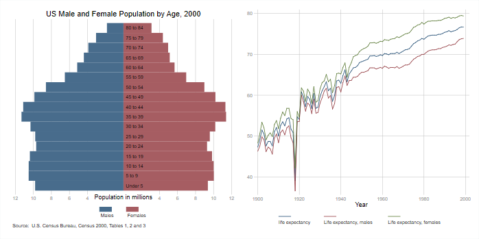
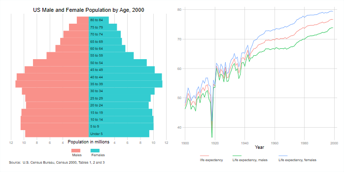
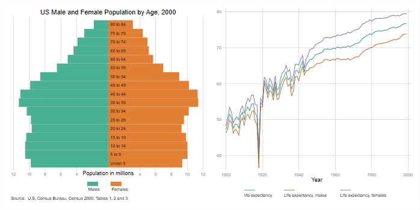
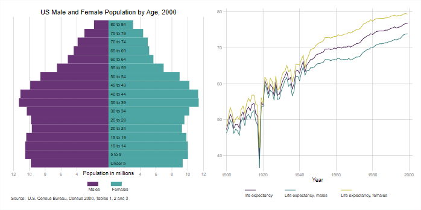
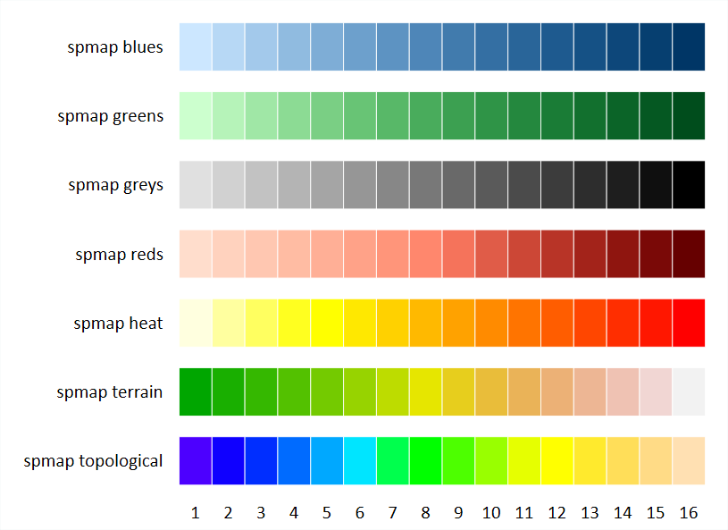
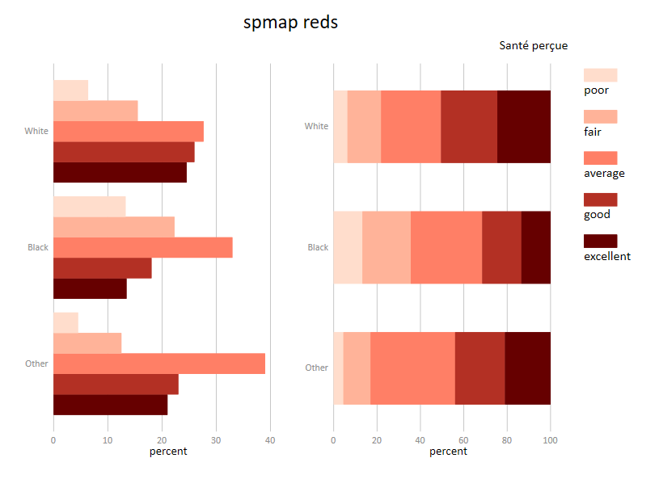
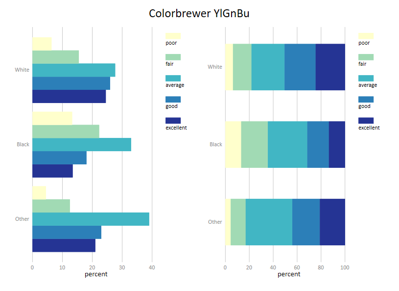
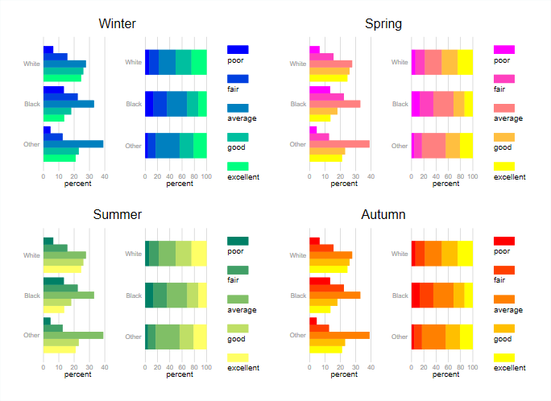
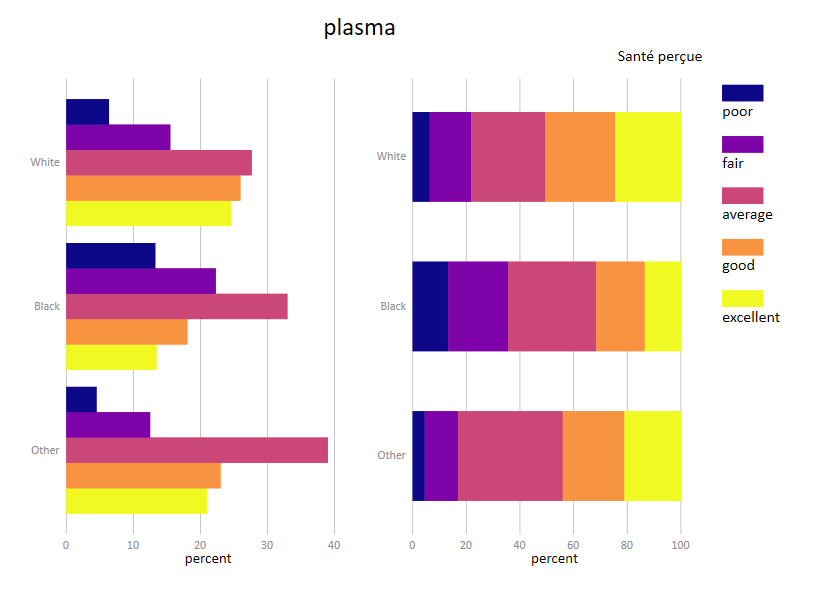

Visualisation des données
Marc Thevenin
10/07/2020
1 Plan
- Visualisation de la progression:
- Bien avancée
- Avancée
- Un peu avancée
- A faire
- Générer des graphiques
- Les graphiques Stata
- Générer et éditer un graphique
- Les options graphiques
- Options d’un objet graphique
- Options générales d’un graphique
- Graphiques combinés
- Stata 16 et Python
- Utilisation des macros
- Rappel sur les macro
- global/local - levelsof - fonctions associées
- return et ereturn
- Autres: token, compteur++, tempvar
- Alleger la syntaxe et automatiser les modifications
- Macro étendue pour générer un graphique à plusieurs composantes et une légende
- Programmation d’une routine
- Rappel sur les macro
- Couleurs et thèmes
- Les palettes de couleurs
- Les palettes Stata
- Colorpalette de Ben Jann
- Les thèmes graphiques
- Les thèmes Stata et externes
- Grstyle de Ben Jann
- Application
- Les palettes de couleurs
- Visualisation des données avec Stata
- Graphiques statiques
- Variable(s) continues: une/plusieurs
- Histogramme et densité
- Box plot et violon
- Nuages et densité 2d
- Courbes
- Barres
- Histogramme et densité
- Variable(s) catégorielles: une/plusieurs
- Variables continues et catégorielles
- Résultats d’analyses
- Variable(s) continues: une/plusieurs
- Graphiques statiques
- Graphiques intéractifs & animés: Python
- Exemples de graphiques intéractifs
- Exemple de graphiques animés
- Bibliographie & sources
La taille des graphiques a été réduite: clic droit + view image" pour les visualiser en taille réelle
2 Générer et modifier des graphiques
2.1 Les graphiques Stata
- Graphiques de type statiques et non intéractifs
- Graphiques de type one way (Y)) ou two way (X Y)
- Une syntaxe de base plutôt simple
- Des graphiques critiqués pour leur aspect rustre par défaut, loin des standards actuels
- Mauvaise communication officielle : www.stata.com/stata-news/news33-4/spotlight/
- Alors que…: graphworkflow.com
Améliorations récentes:
- Depuis Stata 15, l’opacité/transparence des couleurs peut être modifiée.
- Des commandes externes qui permettent de démultiplier les possibilités en termes de couleurs et de styles, en particulier les deux commandes de Ben Jann: colorpalette et grstyle
- Depuis la version 16 on peut utiliser intéractivement Python sous Stata, ce qui ouvre de nombreuses possibilités au niveau de la visualisation des données [graphiques intéractifs et dynamiques]
2.2 Générer et éditer un graphique
2.2.1 Par les boites de dialogue
Générer un graphique:
- Ouverture d’une boite directement dans la fenêtre command avec la commande db:
db command - Préférer submit` à OK pour laisser la boîte ouverte
Editer un graphique:
- On peut éditer manuellement le graphique après sa création dans la boîte d’édition du graphique, ou en le chargeant après sauvegarde
- On peut enregistrer les modifications avec record - play pour une édition ultérieure. Un fichier au format .grec est enregistrée. Il peut être édité
- Quelques améliorations de l’interface d’édition avec stata 16 [mettre image]
exemple:
2.2.2 Syntaxe
2.2.2.1 Un seul objet graphique
Important: si plusieurs éléments graphiques, le contenu des options suit l’ordre Y1,Y2,Y3…..
Remarque 1: Yi - X peuvent-être des variables ou des coordonnées (graphique type scatteri - pci - pcarrowi) Remarque 2: on peut genérer des graphiques sur des fonctions: tw function Y=f(X)
Exemple [graph gauche]
- Options:
- Option générale:
title()titre du graphique avec aspect par défaut
- Option générale:
Exemple [graph droite]
tw line le le_male le_female year, ///
lc(*.3) ///
title("Espérance de vie") ///
legend(order(1 "Ensemble" 2 "Hommes" 3 "Femmes") pos(4) col(1) ring(0)) ///- Options:
- Options des courbes: intensité de la couleur des courbes réduite pour la variable le
lc(*.2)et augmentée pour le_male et le_femalelc(1.3) - Options générales:
- Titre: positionné à 11 heures à l’exterieur du graphique
pos(11) - modification de la légende
- Labels:
order(1 "Ensemble" 2 "Hommes" 3 "femmes") - A l’intérieur du graphique
ring(0) - Positionnée à 4 heures
pos(11)` - Affichée en une seule colonne
col(1)`
- Labels:
- Titre: positionné à 11 heures à l’exterieur du graphique
- Options des courbes: intensité de la couleur des courbes réduite pour la variable le
- Remarque: la courbe pour l’ensemble de la population a éte mise en arrière plan (première position des Y dans la commande)
Graphique 1

2.2.2.2 Plusieurs objets graphiques
- Chaque composante est séparée par () ou ||
- Elle contient ses options
[tw/graph] (type_graph1 Y1 [Y2] [X] [Z] [, option(Y1 [Y2] ) option(X) option(Z)...]) ///
(type_graph2 Y2 [Y2] [X] [Z] [, optio1(Y1 [Y2] ) option(X) option(Z)...]) ///
[(type_graph3...)] ///
[(type_graph4...)] ... ///
[, options_generales] ou
[tw/graph] type_graph1 Y1 [Y2] [X] [Z] [, option(Y1 [Y2]) option1(X) option1(Z)...] ///
|| type_graph2 Y2 [Y2] [Z] [Z] [, option(Y1 [Y2]) option1(X) option1(Z)...] ///
|| [type_graph3...] ///
|| [type_graph4...] ... ///
[, options_generales] Exemple
sysuse auto, clear
* sans option
tw scatter price mpg if foreign==0 ///
|| scatter price mpg if foreign==1 ///
, legend(order(1 "Domestic" 2 "Foreign"))
* avec option
tw scatter price mpg if foreign==0 , msiz(large) mc(red%50) mlc(black) mlw(vthin) ///
|| scatter price mpg if foreign==1 , msiz(large) mc(blue%50) mlc(black) mlw(vthin) ///
, legend(order(1 "Domestic" 2 "Foreign") region(lcolor(%0))) ///Graphique 2

- Options sur les cercles/bulles:
- Modification de la couleur de remplissage de la bulle avec l’option
mc()[mcolor: marker-color). L’opacité à été réduite à 50% pour laisser apparaitre les bulles superposées en arrière plan:blue%50etred%50 - Modification du contour des bulles avec
mlc(black)(marker-line-color) etmlw(vthin)(marker-line-width) - Augmentation de la taille des bulles avec
msiz(large)(marker-size)
- Modification de la couleur de remplissage de la bulle avec l’option
- Option générale:
- Ajout d’une légende et suppression du contour:
legend(order(1 "Domestic" 2 "Foreign") region(lcolor(%0)))
- Ajout d’une légende et suppression du contour:
Cas particuliers: pour les graphiques de type barres, les options des barres pour chaque variable sont renseignées en précisant le numéro de la barre (yi)
Préférer un graphique à un bloc d’éléments ??
Plutôt que de multiplier le nombre d’objets et d’options, il peut être judicieux de créer une variable pour chaque strate (ici foreign) et de générer un graphique à un seul bloc
2.3 [Quelques] Options graphiques
Il s’agit d’un tour d’horizon forcément imcomplet des options graphiques…bienvenue dans une piscine sans fond.
Un très bon pense bête: https://geocenter.github.io/StataTraining/pdf/StataCheatSheet_visualization15_Syntax_2016_June-REV.pdf
2.3.1 Options d’un objet graphique
COULEURS ET TAILLES/EPAISSEURS
2.3.1.1 Couleurs
- 3 Eléments dans les options couleurs
Un nom ou un code numérique: la couleur navy (première couleur de la palette Stata s2) à pour code RGB [Red-Green-Blue]
"26 71 11"- Modification de l’intensité: par défaut la couleur d’une palette a une intensité de 1, on tire vers le blanc en la réduisant, vers le noir en l’augmentant
- Valeur minimale 0 (blanc ou quasi blanc), pas de valeur maximale.
- Après le nom ou le code couleur, l’intensité est modifiée par
*# - Exemples:
option_couleur(*.5)réduit l’intensité de 50% de la couleur utilisée par défautoption_couleur(*1.2)augmente l’intensité de 20% de la couleur utilisée par défaut
- Réduction de l’opacité (depuis Stata 15): par défaut le niveau d’opacité est de 100% [transparence = 0%]
- Valeur minimale 0, valeur maximale 100
- Après le nom ou le code de la couleur, l’opacité est réduite par
%#avec # compris entre 0 et 100-] - Une transparence totale optionc(
%0) permet de cacher des éléments d’un graphique - Exemples
option_couleurc(%50)donne 50% de transparence à la couleur utilisée par défaut
- On peut combiner les deux modifications:
- Baisser l’intensité et réduire l’opacité n’a pas d’intérêt (voir graphique sur les barres plus bas)
- Augmenter l’intensité et baisser l’opacité modifiera le rendu de la couleur dans le graphique
optionc([couleur]*1.5%50): ici intensité multiplié par 1.5 avec 50% de transparence
Exemples de syntaxes
Objets graphiques
tw scatter Y X, mc(blue%30) mlc(black)
tw line Y X, lc(blue*1.2)
graph box Y1 Y2, box(1,fc(red%50)) box(2,fc(blue%50))Options
EXEMPLES
Nuages - bulles [scatter]
Graphique 3

clear
set obs 200
gen x1=runiform(0,12)
gen y1=runiform(0,8)
gen x2=runiform(8,20)
gen y2=runiform(12,20)
* graph NE
tw (scatter y2 x1, mc("248 118 109*0.5") mlc(black)) ///
|| (scatter y2 x2, mc("0 191 196*0.5") mlc(black)) ///
* graph SE
tw (scatter y2 x1, mc("248 118 109%50") mlc(black)) ///
|| (scatter y2 x2, mc("0 191 196%50") mlc(black)) ///
* remarque: les tailles des markers ont également été modifiées dans ces graphiquesBarres [bar - histogram - box - area - rarea]
Graphique 4

Graphique 5

2.3.1.2 Taille - Epaisseurs
2.3.1.2.1 Tailles/épaisseurs prédéfinies
- Les tailles et épaisseurs prédéfinies ont un nom (small, large…)
- Selon l’élément (symbole, courbe, texte), les noms et la liste changent
Types marker
Graphique 6

Graphique 7

Graphique 8

Graphique 9

Types line
Graphique 10 
Graphique 11

Graphique 12

2.3.1.2.2 Tailles paramétrées
- Les tailles et épaisseurs peuvent être paramétrées manuellement:
- par unité de mesure: #pt (printer point) #in (pouce) #cm (centimètre ) #rs
- par un degré relatif de la taille du graph #rs(#)
- par un coefficient multiplicateur d’une taille de référence =1:
option_couleur(*#)
- par unité de mesure: #pt (printer point) #in (pouce) #cm (centimètre ) #rs
Graphique 13

Exercices
Avec la base auto [sysuse auto.dta]
* Graphique(s) I
- Reproduiser l’un et/ou l’autre de ces graphiques
- Les densités sont estimées avec la fonction
kdensity[help kdensity]
Graphique 14

Programme en mode alerte spoil!!!!
kdensity price if foreign==1, g(x1 d1) nograph
kdensity price if foreign==0, g(x0 d0) nograph
tw histogram price0, freq fcolor(blue%50) lc(%0) ///
|| histogram price1, freq fcolor(red%50) lc(%0) ///
legend(order(1 "Domestic" 2 "Foreign") region(lcolor(%0))) ///
xlabel(000(5000)20000) graphr(color(white)) plotr(color(white))
tw area d1 d0 x0, fc(blue%50 red%50) lc(%0 %0) ///
legend(order(1 "Domestic" 2 "Foreign") region(lcolor(%0))) /// xlabel(0000(5000)20000) ylabel(0(0.0001)0.0004) /// xtitle("") graphr(color(white)) plotr(color(white))
Graphique(s) II
- Reproduir le graphique suivant:
- La droite de l’OLS est générée avec le type de graphique
lfitci:- Couleur de la droite: option
clcolor() - Couleur de l’intervalle de confiance: option
flcolor() - Couleur du contour de l’intervalle de confiance: option
alcolor()
- Couleur de la droite: option
Légende facultative (voir section suivante)
Graphique 15

Programme en mode alerte spoil!!!!
tw lfitci price mpg if foreign==0, clcolor(blue*1.2) fcolor(blue%10) alcolor(%0) /// || lfitci price mpg if foreign==1, clcolor(red*1.2) fcolor(red%10) alcolor(%0) /// || scatter price mpg if foreign==0, msize(medlarge) mlc(black) mlw(vthin) mc(blue*.5) /// || scatter price mpg if foreign==1, msize(medlarge) mlc(black) mlw(vthin) mc(red*.5) /// , legend(order(5 "Domestic" 6 "Foreign")) /// ytitle("price") xtitle("mpg")
2.3.2 Axes - Légendes - Titres
2.3.2.1 Axes
4 sous ensembles d’options: titre, label, échelles et choix pour les axes multiples (non traité)
Titres
- xtitle() ytitle():
xtitle(["titres"] [, options]- Si seulement des option(s) en conservant le titre par défaut (label de la variable):
xtitle(, options) - Principales options: taille
size(), couleurcolor() - Titres sur plusieurs lignes:
xtitle("ligne1" ligne2"....[, options]
- Si seulement des option(s) en conservant le titre par défaut (label de la variable):
Labels
- xlabel() ylabel():
xlabel([coordonnées] [,options])- Si seulement des option(s) en conservant les coordonnées par défaut:
xlabel(, options)
- Si seulement des option(s) en conservant les coordonnées par défaut:
- Modification du label:
- Avec min(delta)max:
xlabel(#1([#2]#3)). Exemplexlabel(0(5)10) - Manuel:
xlabel( #1 "label1" #2 "label2"... ). Exemplexlabel(0 "0" 5 "5" 10 "10"... ). Permet d’ajouter des éléments de texte:xlabel(0 "0X" 5 "5X" 10 "10X"... )
- Avec min(delta)max:
- Principales options:
- taille
labsize()[labs] , couleurlabcolor()[labc] - Alterner les positions pour éviter les chevauchements:
alternate(alt) - Modifier l’angle:
angle(#)avec # valeur de l’angle [0 (horizontal), 45, 90 (vertical) …]
- taille
Echelles
- xscale() yscale()
- Principalement utilisé pour l’option
log(voir exemple ci-dessous): utilisation d’une échelle logarithmique (voir exemple ci-dessous) - Echelle en ordre décroissant:
reverse - Supprimer l’affichage des axes:
xscale(off)et/ouyscale(off)
- Principalement utilisé pour l’option
Graphique 16

Attention pour la dernière option, le label doit-être indiqué par des doubles quotes " label " et non par ‘label’: xlabel(10000 "10k" 20000 "20k" 30000 "30k" 40000 "40k")
Graphique options 1
tw scatter lexp gnppc if region==1, ///
|| scatter lexp gnppc if region==2, ///
|| scatter lexp gnppc if region==3, ///
, title("Options 2") ///
legend(order(1 "Eur & C.Asia" 2 "N.A" 3 "S.A")) ///
xscale(log) xlabel(,alt) xtitle(, size(small)) ///
ylabel(50(5)80) ytitle(, size(small)) AIDES
- https://www.stata.com/manuals/g-3axis_options.pdf#g-3axis_options
help axis_optionshelp axis_title_optionshelp axis_label_optionshelp axis_scale_optionshelp axis_choice_options
2.3.2.2 Légendes
- legend():
legend() - Ne pas afficher une légende:
legend(off) - Position par défaut: 6 heures (Sud) - Extérieur. Modifiable avec
pos(#)etring(#)[voir Annexe plus bas] - Modifier le nombre de lignes et de colonne:
row(#)etcol(#) - Modifier les labels de la légende:
- order():
order( 1 "label1" 2 "label2" .....) - lab():
lab(1 "label1") lab(2 "label2") ...) - L’apparence (gras, itallique…) sont modifiables avec des balises smcl
- order():
- Modifier l’aspect de la région:
region(options)our(options) - Texte sous le symbol:
stack
Graphique 17

Par défaut
tw scatter mpg price if foreign==0 ///
|| scatter mpg price if foreign==1 ///
title("Legende par défaut")Avec modification
tw scatter mpg price if foreign==0 ///
|| scatter mpg price if foreign==1 ///
, title("Modification de la légende") ///
legend(order(1 "{bf:Domestic}" 2 "{bf:Foreign}") ///
pos1) ring(0) col(1) ///
region(lw(vvthin)) ///
stack ) - Changement des labels de la légende, affichés en gras:
order(1 "{bf:Domestic}" 2 "{bf:Foreign}") - Position à 1 heure dans le graphique et affichage sur une ligne :
pos(1) ring(0) col(1) - Modification de la boite avec un contour très fin:
region(lw(vvthin) - Text sous le symnol: option
stack
AIDES
- https://www.stata.com/manuals/g-3legend_options.pdf
help legend_options
2.3.2.3 Titres - Notes - Texte
- Modification de la position
- Titre par défaut: à 12 heures à l’extérieur
- Note par défaut: à 17 heures à l’extérieur
- Caption par défaut: sous la note
- Titre(s) - Notes - Texte: Modifiable avec
pos(#)etring(#)[voir Annexe plus bas] - Texte libre: positionné sur les coordonnées des axes (x,y)
- L’apparence (gras, italique, polices…) sont modifiables avec des balises smcl + ajout de symboles mathématiques + lettres grecques
- Tailles et couleurs modifiables avec
sizeetcolor - Plusieurs lignes:
"ligne1" "ligne2"....
ANNEXE: POSITION
Texte positionné au Nord et au Sud
Graphique 18

Texte positionné à l’Ouest et à l’Est
Graphique 19

idée du 26/06: Positionner un texte manuellement pour faire apparaitre un point/une zone du graphique [A faire]
2.3.3 Autres
- name: sauvegarde temporaire sur la session
- utiliser l’option replace pour écraser le graph, sinon effectuer
graph drop noms_graphsougraph drop _all - Exemple:
tw line y x, name(g1,replace)
- utiliser l’option replace pour écraser le graph, sinon effectuer
- save: sauvegarde en dur sur le disque
- Utile de créer un répertoire par défaut avec une macro (type
global):global g "D:/stata_graph/"puistw line y x, save($g/g1, replace) - récupérer les infos d’un graph enregistré:
graph describe nom_grap.gph(le code est affiché)
- Utile de créer un répertoire par défaut avec une macro (type
- scale(#): permet de réduire la taille de tous les éléments générés par le graphique, en particulier le texte. Utile, par exemple, lorsque le texte d’une légende sort du contour.
- nodraw: équivalent de
quietlypour les graphiques. Permet de réduire le temps d’exécution pour les graphiques combinés
2.4 Les graphiques combinés
- 2 commandes:
- interne: graph combine
- externe: grc1leg pour avoir une seule légende, si elle est partagé pour tous les graphiques
- préférer
name()àsave()pour les graphiques composants le graphique combiné - utiliser
nodrawpour raccourcir le temps d’exécution - graph combine et gr1leg (externe: permet d’afficher une seule légende)
- row(#) - cols(#)
- iscale(#): baisse ou augmente la taille des éléments textes par un coefficient multiplicateur
- xsize(#) - ysize(#): taille du graphique en pt (max # = 20)
- Pour un graphique à plusieurs colonne et une ligne: on peut augmenter le ratio xsize(#)/ysize(#)
- Pour un graphique à plusieurs lignes et une colonne: on peut baisser le ratio xsize(#)/ysize(#)
- xcommon - ycommon: ajuster les axes pour tous les graphiques
- legendfrom: une seule légende avec l’option legendfrom(name) de la commande
gr1leg - gestion des styles: si les graphiques utilisent des thèmes graphiques différents, le dernier sera appliqué à tous les graphiques. Pour conserver les thèmes d’origine:
scheme(nom_style1 nom_style2....)
2.5 Python
- Implémentation de Python avec la version 16 de Stata:
- Stata n’intalle pas Python: [Installation de Python] https://mthevenin.github.io/stata_fr/python.html
- Implémentation de commandes Stata dédiées pour gérer l’utilisation de Python [
python querypython describepython clear….] - Python est exécutable dans la fenêtre command ou dans l’éditeur de programme
- Une librairie Python pour faciliter le passage d’une application à une autre
- Les macros Stata reconnues lorsqu’on passe en code Python (très intéressant pour les graphiques)
Exemple 1
Exemple 1
python:
----------------------- python (type end to exit) --------------------
a=1
b=2
a+b
3
end
----------------------------------------------------------------------Exemple 2: importation d’une base Stata avec la librarie pandas Fonction panda: read_stata(‘path/nom_bas’)
python:
----------------------- python (type end to exit) --------------------
import pandas as pa
df = pa.read_stata('D:/stata_temp/auto.dta')
df.head(10)
price mpg turn displacement gear_ratio foreign
0 4099 22 40 121 3.58 Domestic
1 4749 17 40 258 2.53 Domestic
2 3799 22 35 121 3.08 Domestic
3 4816 20 40 196 2.93 Domestic
4 7827 15 43 350 2.41 Domestic
5 5788 18 43 231 2.73 Domestic
6 4453 26 34 304 2.87 Domestic
7 5189 20 42 196 2.93 Domestic
8 10372 16 43 231 2.93 Domestic
9 4082 19 42 231 3.08 Domestic
end
----------------------------------------------------------------------- Graphiques et data-visualisation
- Les trois principales librairies pour les graphiques
matplotlib: https://matplotlib.org/seaborn: https://seaborn.pydata.org/plotlyhttps://plotly.com/graphing-libraries/
- Autres:
ggplotetplotninepour des graphiques types ggplot2- ggplot: la librairie n’est plus mise à jour - très imcomplète
- plotninne: la librairue est mise à jour - incomplète
2.5.1 Librairie seaborn
- Graphiques statiques
Exemple 1
* Partie Stata
sysuse auto, clear
xtile mpg2 = mpg, n(2)
label define mpg 1 "mpg<20" 2 "mpg>=20", modify
label value mpg2 mpg
keep price mpg weight displacement turn mpg2
save auto2, replace
* Partie Python
python:
import pandas as pa
import seaborn as sns
df = pa.read_stata('auto2.dta')
g = sns.pairplot(df, hue="mpg2",palette="hls")
g.savefig("graph1.png")
end
! graph1.pngGraphique 20

Remarques:
- Les labels de la variable mpg2 ont été lus par la fonction Python
pairplot - Le graphique a du être enregistré avec la fonction
savefig(nom_graph)et ouvert avec l’invite de commande windows:! nom_graphoushell nom_graph- Ce n’est pas une obligation, tout dépend de la fonction.
- Si le graphique peut-être affiché directement, on peut utiliser la fonction
show()
**Exemple 2
Histogrammes et heatplot
use nhanes2, clear
keep height weight
save pression, replace
python:
import pandas as pa
import seaborn as sns
df = pa.read_stata('pression.dta')
sns.set(style="ticks")
g = sns.jointplot(x="height", y="weight", kind="hex", color="mediumvioletred", data=df)
g.savefig("graph2.png")
end
! graph2.png Graphique 21

Lecture/Remarques: [A FAIRE]
Densité: en remplaçant l’option kind="hex" par kind="kde"
Graphique 22

2.5.2 Plotly
Graphiques de type intéractifs et/ou dynamiques - possibilité de programmer des dashboard [A testé d’ici septembre]
- Graphiques intéractif et dynamique Intéractivité:
- des informations s’affichent en passant sur le(s) élément(s) du graphique - on peut sélectionner une partie du graphique
- On peut choisir de faire apparaître une partie des éléments composant le graphique. Pratique pour les courbes (clic et double clic dans la légende)
- Des options en haut et à gauche du graphiques permettent de zoomer/dezoomer…
- Graphique enregistré en format html. Pour une capture png, on peut l’enregistrer directement (voir menu en haut et à gauche)
Exemple 1: Graphique intéractif de type line
https://plotly.com/python/line-charts/
sysuse uslifeexp.dta , clear
keep year le le_male le_female
rename le le1
rename le_male le2
rename le_female le3
reshape long le, i(year) j(pop)
label define pop 1 "tot" 2 "Hommes" 3 "Femmes"
label value pop pop
save uslifeexp.dta , replace
python:
import pandas as pa
import plotly.express as px
df = pa.read_stata('uslifeexp.dta')
fig = px.line(df, x="year", y="le", color="pop")
fig.update_layout( title="Espérance de vie US de 1900 & 1999", yaxis_title="Espérance de vie")
fig.show()
endGraphique 23
Options d’intéractivité: [A FAIRE]
Exemple 3 : Graphique intéractif de type tree
https://plotly.com/python/treemaps/
use "gm2.dta", clear
des
/*
--------------------------------------------------------------------------------
storage display value
variable name type format label variable label
--------------------------------------------------------------------------------
country str30 %30s
continent str14 %14s
lifeexp double %6.2f
year float %9.0g
pop long %12.0g
world str5 %9s
--------------------------------------------------------------------------------
*/
python:
import pandas as pa
import plotly.express as px
df = pa.read_stata('gm2.dta')
fig = px.treemap(df, path=['world', 'continent', 'country'], values='pop', color='lifeexp')
fig.show()
endGraphique 24
Lecture:
- Les périmètres des boîtes sont relatifs à la taille de la population: taille relative des continents - taille relative des pays dans chaque continent
- Les différentes couleurs sont relative à la valeur de l’espérance de vie
- Pour world et les continents les espérances sont calculés par une moyenne pondérée: avec stata pour l’Europe:
sum lifeexp [iw=pop] if continent=Europe" - Manque quelques pays dont le continent n’était pas renseigné dans la base d’origine et que je n’ai pas pris la peine et/ou le temps de modifier
Exemple 3 : Graphique intéractif et dynamique de type barres
https://plotly.com/python/bar-charts/
use gm3, clear
drop if year<1960
drop if continent==""
replace continent="Asia & Oceania" if inlist(continent, "Asia", "Oceania")
bysort country: gen N=_N
sort year pop
drop if N<61 // On conserve seulement les pays avec toutes les années renseignées
tostring year, replace
drop N
save gm4, replace
des
--------------------------------------------------------------------------------
storage display value
variable name type format label variable label
--------------------------------------------------------------------------------
country str30 %30s
continent str14 %14s
pop long %12.0g
year float %6.0f
--------------------------------------------------------------------------------
python:
import pandas as pa
import plotly.express as px
df = pa.read_stata('gm4.dta')
fig = px.bar(df, x="continent", y="pop", color="continent",
animation_frame="year", animation_group="country", range_y=[0, 5000000000])
fig.update_layout( title="Evolution de la population mondiale depuis 1960",
yaxis_title="Population", xaxis_title="Continents")
fig.show()
endGraphique 25
3 Utilisation des macros
3.1 Types et objets macro
- Rappel important: (toujours) tester le contenu de la macro avec
display(di) ou [très conseillé] avecmacro list:macro list _nom_macro- di `nom_macro’
- di “`nom_macro’”
- boucles: pour générer des boucles se reporter à l’aide:
help foreach-help forvalue
3.1.1 local - global
- global: macro en dur (enregistrée)
- Appelé avec $
Supression: `macro drop nom_macro1 nom_macro2…``
Pas de grande utilité à mon sens pour les graphiques, sauf pour utiliser un répertoire par défaut de sauvegarde des graphiques
- local: macro temporaire (à l’exécution)
- Appelé avec des quotes simples `
nom_macro'(première quote: [alt6])
- Appelé avec des quotes simples `
Exemple
sysuse auto, clear
global varlist price mpg
tw scatter $varlist
macro drop varlist
local varlist price mpg
tw scatter `varlist'- Macro et doubles quotes apparentes [TRES IMPORTANT]
- se fier à
macro listet non àdipour vérifier la lecture de la macro
- se fier à
Non lue avec display, utilisable dans une commande
Lue avec des doubles quotes, non utilisable dans une commande
[A réserver avec display]
Lue sans les doubles quotes, utilisable dans une commande [A utiliser avec des commandes ultérieures qui demandent des doubles quotes apprentes]
On reviendra plus bas sur cette question avec les macros élargies pour générer, par exemple, des légendes automatiquement
- La commande magique LEVELSOF
- Transforme les valeurs d’une variable en expression macro
- Syntaxe:
levelsof nom_var [if/in], local(nom_macro)
Exemple
- Fonctions associées au macro:
- On peut associer des fonctions aux macros, certaines sont utiles pour les graphiques (
help macro- https://www.stata.com/manuals/pmacro.pdf) - Exemple:
word count(),labn,lab
- On peut associer des fonctions aux macros, certaines sont utiles pour les graphiques (
word count()
On compte le nombre d’objets contenus dans une macro (séparé par un espace). Utile pour compter le nombre de boucles a effectuer avec forvalue
value label nom_variable Récupère le nom d’un label
label nom_label valeur Récupère le nom de la modalité associé à une valeur d’un nom de label
Exemple dans une boucle
gen rep= rep78<4
label define rep 0 "rep<4" 1 "rep>=4", modify
label value rep rep
local varname rep
local labn: value label `varname'
levelsof `varname', local(l)
foreach l2 of local l {
local lab`l2': label `labn' `l2'
}
tw scatter price mpg if `varname'==0, mc(%70) mlc(black) mlw(vthin) ///
|| scatter price mpg if `varname'==1, mc(%70) mlc(black) mlw(vthin) ///
, legend(order(1 "`lab0'" 2 "`lab1'"))Graphique 26

En changeant local varname rep par local varname foreign
Graphique 27

- Mofication du format d’une valeur numérique (changement du nombre de décimale)
- On peut utiliser les objets types
r()oue()dans un graphique (voir plus bas) - Certaines valeurs en mémoire comporte un nombre élévé de decimales
- On peut modifier le format d’affichage de ces valeurs avec une macro: **
di format valeur**
- On peut utiliser les objets types
- Expression numérique calculée dans une macro:
local nom_macro = expression
3.1.2 Objets type return et ereturn
Après l’exécution d’une commande, un certains nombre d’objets sont conservé en mémoire jusqu’à l’exécution de la commande suivante
- objet return [result] :
r()- Affichage liste:
return list
- Affichage liste:
- objet ereturn [estimation]:
e()- Affichage liste:
ereturn list
- Affichage liste:
- Autres
- Matrices:
matrix list
- Matrices:
Exemple
sum price, d
Price
-------------------------------------------------------------
Percentiles Smallest
1% 3291 3291
5% 3748 3299
10% 3895 3667 Obs 74
25% 4195 3748 Sum of Wgt. 74
50% 5006.5 Mean 6165.257
Largest Std. Dev. 2949.496
75% 6342 13466
90% 11385 13594 Variance 8699526
95% 13466 14500 Skewness 1.653434
99% 15906 15906 Kurtosis 4.819188
return list
scalars:
r(N) = 74
r(sum_w) = 74
r(mean) = 6165.256756756757
r(Var) = 8699525.97426879
r(sd) = 2949.495884768919
r(skewness) = 1.653433511704859
r(kurtosis) = 4.819187528464004
r(sum) = 456229
r(min) = 3291
r(max) = 15906
r(p1) = 3291
r(p5) = 3748
r(p10) = 3895
r(p25) = 4195
r(p50) = 5006.5
r(p75) = 6342
r(p90) = 11385
r(p95) = 13466
r(p99) = 15906- Ces résultats peuvent être utilisés, tels quels, lors de l’exécution de la commande suivante
- Ces résultats peuvent être conservé en mémoire dans une macro, et être utilisés tout du long du programme
Exemple
local varlist price mpg
foreach v of loc varlist {
qui sum `v'
local m`v' : di %6.2f `r(mean)'
di "Moyenne `v'= `m`v''"
}- Niveau graphique:
- Permet d’afficher des valeurs dans le graphique
- Permet de générer automatiquement des éléments de type
xlineyline - Permet de généré des graphiques de type scatteri ou pci [on entre directement les coordonnées des axes et non des variables]
Exemple
xtile qprice = price, n(4)
local varlist price mpg
foreach v of loc varlist {
qui sum `v'
local m`v' : di %6.2f `r(mean)'
}
tw scatter price mpg if qprice==1, mlc(black) mlw(vthin) mc(%70) msiz(medlarge) ///
|| scatter price mpg if qprice==2, mlc(black) mlw(vthin) mc(%70) msiz(medlarge) ///
|| scatter price mpg if qprice==3, mlc(black) mlw(vthin) mc(%70) msiz(medlarge) ///
|| scatter price mpg if qprice==4, mlc(black) mlw(vthin) mc(%70) msiz(medlarge) ///
yline(`mprice', lw(vthin) lc(black)) xline(`mmpg', lw(vthin) lc(black)) msiz(large) ///
note("Moyenne Price = `mprice'" ///
"Moyenne Mpg = `mmpg'" ) legend(off)Graphique 28

3.1.3 Autres
Token
- Plutôt utilisé dans la programmation de routines (.ado) mais peut s’avérer utile pour transformer les variables du graphique en macro.
- Token est une macro qui prend comme noms une suite de nombre (un numéro)
- On transforme une expression en token avec la commande
tokenize
tokenize price mpg
sum `1' `2'
Variable | Obs Mean Std. Dev. Min Max
-------------+---------------------------------------------------------
price | 74 6165.257 2949.496 3291 15906
mpg | 74 21.2973 5.785503 12 41Ou avec une expression sous forme de macro
local varlist price mpg
tokenize `varlist'
sum `1' `2'
Variable | Obs Mean Std. Dev. Min Max
-------------+---------------------------------------------------------
price | 74 6165.257 2949.496 3291 15906
mpg | 74 21.2973 5.785503 12 41Application pour un graphique
local varlist price mpg foreign
tokenize `varlist'
tw scatter `1' `2' if `3'==0 ||
tw scatter `1' `2' if `3'==1 Compteur i++
- Utile dans les boucles
foreachpour générer un compteur type macro qui fonctionne comme dans une boucleforvalue - Dans une boucle de type
forvaluepermet de générer un compteur dont les valeurs de départ et d’arrivée diffèrent des valeurs de la boucle
- On initialise sa valeur initiale par une macro:
local i=valeur
local i = 1
local varlist price mpg turn length
foreach v of local varlist {
di "var`i++' = `v'"
}
var1 = price
var2 = mpg
var3 = turn
var4 = lengthApplication au graphique précédent: Le nom des macros qui enregistre les valeur des moyennes de price et rpg s’appelent maintenant m1 et m2
local i=1
local varlist price mpg
foreach v of loc varlist {
qui sum `v'
local m`i++' : di %6.2f `r(mean)'
}
tw scatter price mpg if qprice==1, mlc(black) mlw(vthin) mc(%70) msiz(medlarge) ///
|| scatter price mpg if qprice==2, mlc(black) mlw(vthin) mc(%70) msiz(medlarge) ///
|| scatter price mpg if qprice==3, mlc(black) mlw(vthin) mc(%70) msiz(medlarge) ///
|| scatter price mpg if qprice==4, mlc(black) mlw(vthin) mc(%70) msiz(medlarge) ///
yline(`m1', lw(vthin) lc(black)) xline(`m2', lw(vthin) lc(black)) ///
note("Moyenne Price = `m1'" ///
"Moyenne Mpg = `m2'" ) legend(off)On peut maintenant, avec les tokens créer un graphique qui n’appelle qu’un fois les variables du graphique. On peut donc changer les variables en ne modifiant qu’une ligne
local i=1
local varlist price mpg qprice
tokenize `varlist'
xtile q`1' = `1', n(4)
foreach v of loc varlist {
qui sum `v'
local m`i++' : di %6.2f `r(mean)'
}
tw scatter `1' `2' if `3'==1, mlc(black) mlw(vthin) mc(%70) msiz(medlarge) ///
|| scatter `1' `2' if `3'==2, mlc(black) mlw(vthin) mc(%70) msiz(medlarge) ///
|| scatter `1' `2' if `3'==3, mlc(black) mlw(vthin) mc(%70) msiz(medlarge) ///
|| scatter `1' `2' if `3'==4, mlc(black) mlw(vthin) mc(%70) msiz(medlarge) ///
yline(`m1', lw(vthin) lc(black)) xline(`m2', lw(vthin) lc(black)) ///
note("Moyenne `1' = `m1'" ///
"Moyenne `2' = `m2'" ) legend(off)Avec la variable displacement au lieu de price:
local i=1
local varlist displacement mpg qdisplacement
tokenize `varlist'
xtile q`1' = `1', n(4)
foreach v of loc varlist {
qui sum `v'
local m`i++' : di %6.2f `r(mean)'
}
tw scatter `1' `2' if `3'==1, mlc(black) mlw(vthin) mc(%70) msiz(medlarge) ///
|| scatter `1' `2' if `3'==2, mlc(black) mlw(vthin) mc(%70) msiz(medlarge) ///
|| scatter `1' `2' if `3'==3, mlc(black) mlw(vthin) mc(%70) msiz(medlarge) ///
|| scatter `1' `2' if `3'==4, mlc(black) mlw(vthin) mc(%70) msiz(medlarge) ///
yline(`m1', lw(vthin) lc(black)) xline(`m2', lw(vthin) lc(black)) ///
note("Moyenne `1' = `m1'" ///
"Moyenne `2' = `m2'" ) legend(off)Graphique 29

Spoil alert: il ne reste plus qu’à se débarasser de la répétition des options dans le graphique [section suivante]
** Pour info: autres compteurs
++i
Remarque: pour retrouver les valeurs du compteur i++, il suffit s’initialiser i à 0
i--
--i
Objet temporaire: tempvar, tempfile, tempname….
- tempvar: très utile.
- Evite de créer des variables qui entre en conflit avec des variables existantes dans la base
- La variable temporaire est conservée en mémoire, mais n’apparait pas dans la base.
- Une nouvelle variable est créée lorsque le programme est exécuté à nouveau
- syntaxe:
tempvar nom_variable - Lecture: Stata va créer une variable dont le nom est **_0000#**
- Appel de la variable dans le programme:
nom_variable
tempvar qprice
local varlist price mpg `qprice'
tokenize `varlist'
xtile `qprice' = `1', n(4)
local i=1
foreach v of loc varlist {
qui sum `v'
local m`i++' : di %6.2f `r(mean)'
}
tw scatter `1' `2' if `3'==1, mlc(black) mlw(vthin) mc(%70) msiz(medlarge) ///
|| scatter `1' `2' if `3'==2, mlc(black) mlw(vthin) mc(%70) msiz(medlarge) ///
|| scatter `1' `2' if `3'==3, mlc(black) mlw(vthin) mc(%70) msiz(medlarge) ///
|| scatter `1' `2' if `3'==4, mlc(black) mlw(vthin) mc(%70) msiz(medlarge) ///
yline(`m1', lw(vthin) lc(black)) xline(`m2', lw(vthin) lc(black)) ///
note("Moyenne `1' = `m1'" ///
"Moyenne `2' = `m2'" ) legend(off)
describe
(_dta has notes)
-----------------------------------------------------------------------------------------------------
storage display value
variable name type format label variable label
-----------------------------------------------------------------------------------------------------
make str18 %-18s Make and Model
price int %8.0gc Price
mpg int %8.0g Mileage (mpg)
rep78 int %8.0g Repair Record 1978
headroom float %6.1f Headroom (in.)
trunk int %8.0g Trunk space (cu. ft.)
weight int %8.0gc Weight (lbs.)
length int %8.0g Length (in.)
turn int %8.0g Turn Circle (ft.)
displacement int %8.0g Displacement (cu. in.)
gear_ratio float %6.2f Gear Ratio
foreign byte %8.0g origin Car type
__000000 byte %8.0g 4 quantiles of price
-----------------------------------------------------------------------------------------------------
sum __000000
variable __000000 not found
- tempfile: utile seulement si une base doit être générée, pas d’application trouvée pour le document
3.2 Alleger la syntaxe d’un graphique…
… et surtout faciliter les changements d’options
Mêmes options pour les 4 éléments du graphique
tw scatter price mpg if rep78==1, mlc(black) mlw(vthin) mc(%70) msiz(medlarge) ///
|| scatter price mpg if rep78==2, mlc(black) mlw(vthin) mc(%70) msiz(medlarge) ///
|| scatter price mpg if rep78==3, mlc(black) mlw(vthin) mc(%70) msiz(medlarge) ///
|| scatter price mpg if rep78==4, mlc(black) mlw(vthin) mc(%70) msiz(medlarge) ///
|| scatter price mpg if rep78==5, mlc(black) mlw(vthin) mc(%70) msiz(medlarge),
legend(off) Graphique 30

Avec les options sous forme de macro
local ops "mlc(black) mlw(vthin) mc(%70) msiz(medlarge)"
tw scatter price mpg if rep78==1, `ops' ///
|| scatter price mpg if rep78==2, `ops' ///
|| scatter price mpg if rep78==3, `ops' ///
|| scatter price mpg if rep78==4, `ops' ///
|| scatter price mpg if rep78==5, `ops' ///
legend(off)Si on réduit l’opacicité à 60% et qu’on perturbe légèrement les coordonnées jitter(2)
local ops "mlc(black) mlw(vthin) mc(%60) msiz(medlarge) jitter(2)"
tw scatter price mpg if rep78==1, `ops' ///
|| scatter price mpg if rep78==2, `ops' ///
|| scatter price mpg if rep78==3, `ops' ///
|| scatter price mpg if rep78==4, `ops' ///
|| scatter price mpg if rep78==5, `ops' Graphique 31

3.3 Macro élargie
3.3.1 Définition d’une macro élargie
- Macro simple
local l objetA objetB objetC
foreach i of local l {
local ms `i'
}
objetA
objetB
objetC
* expression de la macro après l'exécution de la boucle
di "`ms'"
objetCMacro élargie
- Conserve l’expression de la macro de la boucle précédente
Syntaxe:
local l objetA objetB objetC
foreach i of local l {
local ms `ms' `i'
di "`ms'"
}
objetA
objetA objetB
objetA objetB objetC
di "`ms'"
objetA objetB objetC- Boucle 1: (macro boucle 1)
- Boucle 2: (macro boucle 1) + (macro boucle 2)
- Boucle 3: (macro boucle 1) + (macro boucle 2) + (macro boucle 3)
- etc….
3.3.2 Créer un graphique avec une macro élargie
levelsof rep78, local(l)
foreach i of local l {
local scat `scat' scatter price mpg if rep78==`i' ||
di "`scat'"
}Lecture dans l’output:
Boucle 1: rep78=(1)
Boucle 2: rep78=(1,2)
Boucle 3: rep78=(1,2,3)
Boucle 4: rep78=(1,2,3,4)
scatter price mpg if rep78==1 || scatter price mpg if rep78==2 || scatter price mpg if rep78==3 ||
scatter price mpg if rep78==4 ||Boucle 5: rep78=(1,2,3,4,5)
scatter price mpg if rep78==1 || scatter price mpg if rep78==2 || scatter price mpg if rep78==3 ||
scatter price mpg if rep78==4 || scatter price mpg if rep78==5 ||On adonc de générer un graphique dans une boucle. Pour l’exécuter:
3.3.3 Générer une légende avec une macro élargie
Utiliser la bonne expression pour les macros simple car les doubles quotes doivent être apparentes dans la définition de la légende
Application 1
- on utilise pas les fonction pour générer les labels (cf Application 2)
- On génére également le graphique avec une macro élargie comme ci-dessus. La macro de la définition y est associée
On génère la légende avec une macro élargie
sysuse auto
local l1 `""Domestic""'
local l2 `""Foreign""'
forvalue i=1(1)2 {
local ord `ord' `i' `l`i''
}
macro list _ord
_ord: 1 "Domestic" 2 "Foreign"On génère les éléments du graphique avec une macro élargie
levelsof foreign, local(l)
local ops mlc(black) mlw(vthin)
foreach i of local l {
local scat `scat' scatter price mpg if foreign==`i', `ops' ||
}
macro list _scat
_scat: scatter price mpg if foreign==0, mlc(black) mlw(vthin) || scatter price mpg if foreign==1, mlc(black) mlw(vthin) ||On génère le graphique avec la légende
Application 2
- Même graphique mais on va automatiser sa création avec:
- des tokens pour les variables
- les fonctions associées aux macros pour récurérer les labels automatiquement (voir plus haut)
- Fonction
value label^pour récupérer le nom du label - Fonction
labeldans une boucle pour récupérér les libellés
- Fonction
local varlist price weight foreign
tokenize `varlist'
* Légende
local labn: value label `3'
levelsof `3', local(l)
local i=1
foreach l2 of local l {
local lab`l2': label `labn' `l2'
local lab`l2' `""`lab`l2''""'
local ord `ord' `i++' `lab`l2''
}
* Graphique
local ops mlc(black) mlw(vthin)
foreach i of local l {
local scat `scat' scatter `1' `2' if `3'==`i', `ops' ||
}
macro list _scat
tw `scat', legend(order(`ord')) Ci-dessous une transformation très simple en routine, appelée sgraph [syntaxe: sgraph varlist ]
3.4 Routine - Commande
Aide Stata
Manuel Stata programming: https://www.stata.com/manuals/p.pdf#ppProgramming [entrée syntax]
- principe des programmes qui exécutent des commande (.ado)
- la routine peut être programmée dans le programme principe (.do) ou enregistré comme .ado** dans le répertoire où sont enregistré les commandes externes (répertoire ado). Il est conseillé de les enregistrer dans un sous répertoire appelé personal
- Syntaxe:
- Si la routine est programmée dans le .do:
capture program drop nom_routine
program define nom_routine [options]
syntax [arguments]
....programme de la routine...
end- Si la routine est enregistrée, la première ligne n’est pas pas obligatoire
Exemple simple: une soustraction
capture program drop soustraction
program define soustraction
syntax anything
tokenize `anything'
di ""
di as result "Le résultat de ma soustraction est: " `1' - `2'
end
soustraction 1245 722
523Exemple “simple” pour un graphique
- On reprend le programme précédent (macro élargie et légendes), avec quelques options modifiées (une ligne pour la légende, perturvation des coordonnées (
jitter(#)), couleur de la bulle) - On fixe les arguments de la commande:
varlist(min=3 max=3)
capture program drop sgraph
program define sgraph
syntax varlist(min=3 max=3)
tokenize `varlist'
local labn: value label `3'
levelsof `3', local(l)
local i=1
foreach l2 of local l {
local lab`l2': label `labn' `l2'
local lab`l2' `""`lab`l2''""'
local ord `ord' `i++' `lab`l2''
}
local ops mlc(black) mlw(vthin) jitter(3) mc(%70)
foreach i of local l {
local scat `scat' scatter `1' `2' if `3'==`i', `ops' ||
}
macro list _scat
tw `scat', legend(order(`ord') rows(1))
endOn exécute la commande sgraph
Exemple
sysuse citytemp4.dta, clear
* cpnversion des températures en degré Celsus
replace tempjan = (tempjan - 32 )*5/9
replace tempjuly = (tempjuly - 32 )*5/9
sgraph tempjan tempjuly regionGraphique 32

3.5 Un festival de macros
La macro dans (presque) tous ses états
Presque car:
- Pas de variable temporaire (oblige ici à dropper des variables en fin de programme)
- Pas de macro avec une expression étendue (inutile ici)
Graphique généré
- Graphique de type violon (variable continue). Sans la boxplot, ce type de graphique est appelé bean plot
- Compare la distribution d’une variable variable pour deux modalités d’une variable catégorielle)
Principales étapes
- Paramètres du graphique sous forme de macro (
local) - Estimation de la densité avec création des variables associées
- Récupération des valeurs pour les boxplots (Q1 - Q2 - Q3)
- Légende
- Style et couleur (anticipe un peu une partie suivante)
- Graphique
- type
areapour les densites - type
pcipour les boxplot - type
scatterpour les outliers des boxplots
- type
On compare la pression sanguine des hommes et des femmes (base nhanes2.dta): variables bpsystol et sex:
Graphique 33

[Expliquer rapidement le graphique: densites en mirroire + boxplot] [Données quelques éléments d’amélioration: un échantillon pour les outliers, ici c’est trop chargé / problème rencontrés sur le rendu des axes avec des petites échantillons: base auto variable displacement par exemple]
Programme en un bloc
webuse nhanes2, clear
* définition des variables et des options pour density dans une macro
local y bpsystol
local z sex
local bw 5
local ker gau
* Création des variables pour la densité et normalisation des échelles
levelsof `z', local(l)
local i=1
foreach s of local l {
local j `i++'
qui kdensity `y' if `z'==`s', gen(x`j' d`j') nograph kernel(`kernel') bw(`bw')
qui sum d`j', d
local min`j' `r(min)'
local max`j' `r(max)'
qui replace d`j' = d`j'*(.3/(`max`j''- `min`j''))
}
* variable miroir pour la densité dans l'axe négatif
replace d1=-d1
* translation de la densité avec valeur min à 0
local i=1
foreach s of local l {
local j `i++'
qui sum d`j', d
local min`j' `r(min)'
local max`j' `r(max)'
qui replace d1 = d1 + (-1)*`max1'
qui replace d2 = d2 - `min2'
}
****** valeurs pour boxplot
** coordonnées: q25/50/75 et bornes inf et sup des moustaches
local i=1
foreach s of local l {
local j `i++'
qui sum `y' if `z'==`s', d
local q2`j': di %6.1f `r(p50)'
local q1`j' : di %6.1f `r(p25)'
local q3`j' : di %6.1f `r(p75)'
scalar min = `q1`j'' - 1.5*(`q3`j'' - `q1`j'')
local inf`j' = scalar(min)
scalar max = `q3`j'' + 1.5*(`q3`j'' - `q1`j'')
local sup`j' = scalar(max)
}
** outliers
qui gen _yo1 = -.02
qui gen _yo2 = .02
local i=1
foreach s of local l {
local j `i++'
qui gen _out`j'= `y' if (`y'>`sup`j'' | `y'<`inf`j'') & `z'==`s'
}
* Génération automatique de la légende (fixe à 2 labels)
* legend: order(...)
local labn: value label `z'
local i=1
foreach s of local l {
local j `i++'
capture local lab`j': label `labn' `s'
}
* On anticipe un peu avec la section suivante pour style et couleur
* installer grstyle et colorpalette si nécessaire
grstyle init
grstyle set plain, horizontal grid compact
grstyle set mesh, horizontal
grstyle set color hue, n(2)
colorpalette hue ,n(2) nograph
* création du graphique
tw area d1 x1, horizontal fc(%60) lc(*0.5) lw(thin) ///
|| area d2 x2, horizontal fc(%60) lc(*0.5) lw(thin) ///
|| pci `q11' -.04 `q11' 0, lc("`r(p1)'*1.3") lw(vthin) ///
|| pci `q21' -.04 `q21' 0, lc("`r(p1)'*1.3") lw(vthin) ///
|| pci `q31' -.04 `q31' 0, lc("`r(p1)'*1.3") lw(vthin) ///
|| pci `q11' -.04 `q31' -.04, lc("`r(p1)'*1.3") lw(vthin) ///
|| pci `q11' -.0003 `q31' -.0003, lc("`r(p1)'*1.3") lw(vthin) ///
|| pci `inf1' -.02 `q11' -.02, lc("`r(p1)'*1.3") lw(vthin) ///
|| pci `q31' -.02 `sup1' -.02, lc("`r(p1)'*1.3") lw(vthin) ///
|| scatter _out1 _yo1, msize(vsmall) mlc(black) mlw(vvthin) mc("`r(p1)'") jitter(1) ///
|| pci `q12' .04 `q12' 0, lc("`r(p2)'*1.3") lw(vthin) ///
|| pci `q22' .04 `q22' 0, lc("`r(p2)'*1.3") lw(vthin) ///
|| pci `q32' .04 `q32' 0, lc("`r(p2)'*1.3") lw(vthin) ///
|| pci `q12' .04 `q32' .04, lc("`r(p2)'*1.3") lw(vthin) ///
|| pci `q12' .0003 `q32' .0003, lc("`r(p2)'*1.3") lw(vthin) ///
|| pci `inf2' .02 `q12' .02, lc("`r(p2)'*1.3") lw(vthin) ///
|| pci `q32' .02 `sup2' .02, lc("`r(p2)'*1.3") lw(vthin) ///
|| scatter _out2 _yo2, msize(vsmall) mlc(black) mlw(vvthin) mc("`r(p2)'") jitter(1) ///
, ytitle("`y'") xlab(0 "0") xtitle("Densité", size(small)) ///
legend(order(1 "`lab1'" 2 "`lab2'") stack region(lw(vvthin) lc(%0)))
* à défaut d'avoir généré des variables temporaire
drop d1 d2 x1 x2 _y* _out*Programme expliqué par bloc
[A faire]
4 Palettes de couleurs & thèmes
- Les graphiques lorsqu’ils sont générés appliquent un thème/style par défaut:
- Ces thèmes sont appelés scheme
- Les options entrées dans la commande graphique visent à modifier les paramètres du thème
- Les paramètres du style thèmes appliquées aux couleurs, tailles/épaisseurs, positions des éléments de texte, définitions des axes….
- Stata dispose de 5 thèmes officiels
- Des thèmes externes peuvent être installés
- Les thèmes graphiques utilisent des palettes de couleurs
- Trois types de palettes:
- Palettes qualitatives
- Palettes séquentielles
- Palettes divergentes
- Trois types de palettes:
- Des commandes externes permettent d’augmenter le nombre de palettes, de les modifier ou d’en créer
- Pour la cartographie, la commande
spmap(Pisatti) intégre une quarantaine de palettes, principalement séquentielles - La librairie
brewscheme(W.Buchanan) dispose de plusieurs commande pour générer des palettes de couleurs. - La commande
colorpalette(B.Jann) charge plusieurs dizaine de palettes de couleurs, de tout type, et permet de les modifier et permet de les utiliser très facilement dans la création de graphique. Adopté!
- Pour la cartographie, la commande
4.1 Les Palettes de couleurs Stata
Résumé de la page: https://mthevenin.github.io/stata_fr/couleurs.html
4.1.1 Les palettes Stata
Stata dispose de 5 palettes de couleurs qui sont associées à des thèmes graphiques: la palette s2 est associée au thème s2color par exemple

- Les palettes sont de type qualitative
- Remarque On peut les utiliser de manière séquentielle en sélectionnant une couleur et en baissant ou en augmentant l’intensité
(couleur*#) - la palette mono peut(être partiellement utilisée de manière séquentielle: ordre des couleurs 7 à 11 par exemple)
- Remarque On peut les utiliser de manière séquentielle en sélectionnant une couleur et en baissant ou en augmentant l’intensité
- Elles sont composées de 15 couleurs
- Toutes les couleurs ont un nom et un code RGB qui lui est associé
- Dans un graphique, les couleurs utilisées par défaut suivent leur ordre dans la palette


Exemple avec la palette S2
Graphique 34

Graphique de gauche n(2) - graphique de droite n(3)
On est clairement vite limité par l’utilisation des palettes avec Stata
A mon sens la commande colorpalette de Ben Jann permet de démultiplier les possibilités dans l’utilisation des couleurs avec Stata. Un grand merci à lui
4.2 Colorpalette de Ben Jann
4.2.1 Syntaxe et options
Installation `colorpalette
syntaxe: colorpalette nom_palette [, nom_sous_palette options]
Exemple
* Charge et affiche la palette hue
colorpalette hue
* Charge et affiche la palette viridis
colorpalette viridis
* Charge et affiche la sous palette summer de matplotlib (palette Python)
colorpalette matplotlib, summer Visualiser des palettes disponibles dans l’aide: help colorpalette
Principales options
- Modifier la taille de la palette:
n(#)- Important car la réduction de la taille pour certaines palette ne consiste pas à prendre les # premiers éléments de la palette par défaut (cf palette hue ou viridis)
- Modifier l’intensité et l’opacité:
intensity(#)etopacity(#)- Remarque: on peut créer une palette avec séquentielle à partir d’une couleur avec
intensity
- Remarque: on peut créer une palette avec séquentielle à partir d’une couleur avec
- Créer une palette divergente: ipolate(#)
- Sélectionner des couleurs d’une palette:
select(numlist) - Inverse les couleurs de la palette:
reverse - Ne pas afficher la palette:
nograph. Utile pour charger la palette avant son utilisation dans un graphique
Remarque: la commande identifie également une couleur (par son nom Stata ou son code RGB) comme une palette de couleur
Exemple 1:

- On a sélectionné la palette s2
- On a réduit la taille de la palette à 5 couleurs:
n(5) - On a alterné les intensités: une sur deux à .5:
intensity(.4 1 .4 1 .4) - On a inverse l’ordre des couleurs (navy en dernier)
reverse
Exemple 2: création d’une palette séquentielle avec intensity à partir de la couleur stata navy

Exemple3 : création d’une palette divergente avec ipolate avec les couleurs navy (couleur de départ) et la couleur cranberry pues (couleur d’arrivée)
3b: sans couleur intermédiaire

avec une couleur de transition (ici white)

4.2.2 Utilisation pour un graphique
4.2.3 colorpalette et graphique
- Utilisation des macros générées par colorpalette
- la commande génère une liste de macro permettant de récupérer les codes et les noms des couleurs
- la macro r(p) permet d’utiliser les couleurs de la palette dans un graphique à un seul bloc d’élements
- les macros r(p#) permettent d’utiliser les couleurs dans un graphique composé de plusieurs élements
- la commande génère une liste de macro permettant de récupérer les codes et les noms des couleurs
colorpalette navy cranberry, ipolate(5)
return list
scalars:
r(n) = 5
macros:
r(ptype) : "color"
r(pname) : "custom"
r(pnote) : "interpolated"
r(p) : ""26 71 111" "76 73 96" "111 71 92" "151 58 78" "193 5 52""
r(p5info) : "Jab 46 36 12"
r(p5) : "193 5 52"
r(p4info) : "Jab 42 25 5"
r(p4) : "151 58 78"
r(p3info) : "Jab 38 14 -3"
r(p3) : "111 71 92"
r(p2info) : "Jab 34 2 -11"
r(p2) : "76 73 96"
r(p1info) : "Jab 30 -9 -19"
r(p1) : "26 71 111"Exemple
local opw lw(medthick medthick medthick medthick medthick)
tw line le_w le_wmale le_b le_bmale year, `opw' ///
title("couleur s2") name(g1, replace) nodraw
colorpalette midblue, n(4) intensity(1.25 1 .75 .5) nograph
local opc lc(`r(p)')
tw line le_w le_wmale le_b le_bmale year, `opw' `opc' ///
title("couleur générée avec colorpalette") name(g2, replace) nodraw
graph combine g1 g2, iscale(.5)Graphique 35

- La syntaxe de colorpalette est transposable à la commande grstyle. Cela faciletera l’intégration des couleurs dans le graphique.
4.2.4 Exemples de palettes
4.2.4.1 Qualitatives
Palette HUE
- Il s’agit de la palette utilisée par ggplot2 (R)

- Elle a plusieurs cycles de couleurs: Un “rouge” => un “vert => un”bleu" => un rose
Si on utilise donc cette palette à 10 couleurs pour un graphique composée de deux éléments, par exemple deux courbes, le rendu ne sera pas satisfaisant car les deux premières couleurs seront sélectionnées (une couleur plutôt “rouge” et une couleur plutôt"orange. Il convient dont de réduire la taille de la palette (
n2)Couleurs selon la taille de la palette

Exemple 1
Graphique 36

Exemple 2 Graphique 37

Graphique de gauche n(2) - graphique de droite n(3)
Remarque: voir également la palette du thème externe plottig
Les palettes qualitatives de brewcolors

Exemple
Graphique 37

Graphique de gauche n(2) - graphique de droite n(3)
Palette séquentielle à taille réduite: viridis
En réduisant la taille de certaines palettes séquentielles ou divergentes, on peut obtenir une palette plutôt qualitative. C’est le cas des palettes type viridis (populaire)

Exemple
Graphique 38

4.2.4.2 Séquentielles
- Utilisées massivement en cartographie et, plus généralement pour représenter des fréquences (graphique type barre) ou des valeurs ordonnées
- Couleurs allant du plus claire au plus foncé (ou inversement)
- Modification de l’intensité d’une couleur
- Un ou plusieurs cycles de couleurs: par exemples du jaune au rouge, du jaune au noire…..
Spmap

Exemple Graphique 39

Colorbrewer

Exemple
Graphique 40

matplotlib

Exemple: les 4 saisons
Graphique 41

Viridis

Exemple
Graphique 42

4.2.4.3 Palettes divergentes
- Un peu le même principe que les palettes séquentielles, en mettant en avant un point central (de transition) représenté par une couleur de transition, souvent très clair. Typiquement:
- Du bleu (negatif/faible/inférieur à la moyenne…) - vers le blanc (nul/moyen/proche moyenne) - vers le rouge (positif/élevé/supérieur à la moyenne…) avec une partie séquentielle du bleu vers le blanc, et une autre du blanc vers le rouge.
- Pour certains type de graphique, lorsque la couleur centrale est proche du blanc, la couleur de fond du graphique doit être prise en considération
[ Pour les exemples je partirais bien sur une carto (spmap): mais help pour les données]
Colorbrewer

[A finir avec une map en exemple ?]
4.3 Styles - scheme
4.4 Principes - thèmes internes et externe
- Tous les graphiques ont un thème, appelé scheme qui paramètre tous les éléments composant graphiques: palette de couleurs, épaisseurs/tailles, positions, contour, marges….
- Les options entrées dans le graphique visent à modifier ce paramétrage
- Stata dispose de 11 thèmes internes, celui utilisé par défaut est s2color (factory scheme)
- Sans modifier des options, un thème graphique peut ne pas être adapté à une représentation graphique
Changer de thème
- Par les boîtes de dialogue: Edit => Préférences => Graph preferences
- Ligne de commande
- On peut indique le thème en option du graphique le thème à appliquer:
scheme(nom_scheme) - On peut dans un fichier .do ou .ado charger un thème de façon temporaire (session) ou permanente un thème: `set scheme nom_scheme [,permanently]
- Le choix du thème peut-être également intégré au fichier profile (charge le thème au début de chaque programme)
- On peut indique le thème en option du graphique le thème à appliquer:
Thèmes internes
A partir d’un exemple donné dans l’aide Stata pour un graphique type spike (help spike)
sysuse sp500, clear
local scheme s2color s2mono s2gcolor s2manual s2gmanual s1rcolor s1color ///
s1mono s1manual economist sj
foreach s of local scheme {
twoway line close date, yaxis(1) ///
|| spike change date, yaxis(2) ///
||, ysca(axis(1) r(700 1400)) ylab(1000(100)1400, axis(1)) ///
ysca(axis(2) r(-50 300)) ylab(-50 0 50, axis(2)) ///
ytick(-50(25)50, axis(2) grid) ///
legend(off) ///
xtitle("Date") ///
title("S&P 500") ///
subtitle("Scheme = `s'") ///
yline(950, axis(1) lc(black)) scheme(`s') name(`s', replace) nodraw
* graph combine ......
}Graphique 43

Graphique 44

Thèmes externes
- Plusieurs thèmes et collection de thèmes externe sont instalables:
search schemessc instal nom scheme - Exemples: La collection de François Briatte (Burd) et la collection de Daniel Bischoff (plottig, plotplainblind…)…
Graphique 45

4.5 grstyle
- Auteur: Ben Jann
- Autre générateur de thèmes: brewscheme de W.Buchanan, mais à mon sens beaucoup plus complexe
- Ici utilisation minimale, par l’exemple de grstyle avec
grstyle setavec seulement 4-5 lignes de paramètres réutilisables et facilement modificable avec seulementgrstyle set. - Il est possible de générer un thème complet pour tous les types de graphiques
- Pour voir l’ensemble des possibilités :
help grstylehelp grstyle set
Installation grstyle
4.6 Initialisation et enregistrement
- Dans un programme on initialise le générateur avec
grstyle init - Enregistrement du thème:
grstyle init nom_thème, [path] [replace] - Si le thème a été enregistré, on peut le charger dans un graphique avec scheme(nom_scheme). Visiblement on ne peut pas le charger à l’extérieur du graphique avec
set scheme
4.7 Exemple 1
Graphique proposé dans l’aide de line, légèrement simplifié
Avec le thème Stata s2color
sysuse uslifeexp, clear
gen difference = le_wm - le_bm
*[graphique]
tw line le_wm year, yaxis(1 2) ///
|| line le_bm year ///
|| line diff year ///
|| lfit diff year, ///
ylabel(0(5)20, axis(2) gmin ) ///
ylabel(0 20(10)80, gmax ) ///
ytitle("", axis(2)) ///
ylabel(, axis(2) grid) ///
ytitle("Life expectancy at birth (years)") ///
title("White and black life expectancy") ///
subtitle("USA, 1900-1999") ///
note("Source: National Vital Statistics, Vol 50, No. 6" ///
"(1918 dip caused by 1918 Influenza Pandemic)") ///
legend(label(1 "White males") label(2 "Black males")) Graphique 46

- Background du graphique, grid…
- grstyle set plain [options]
- grstyle set [i]mesh [options]
grstyle init
* grstyle set plain, horizontal grid // option dotted pour des pointillés sur le grid
* grstyle set mesh, horizontal compact
* grstyle set imesh, horizontal compact minorGraphique 47

Pour la suite, on conservera comme paramètres la deuxième ligne: grstyle set mesh, horizontal compact
- Légende: position et box
Graphique 48

Autres paramètres généraux: taille du graphique
grstyle set graphsizeet margesgrstyle set margins- Paramètres sur les objets graphiques
- Couleurs:
grstyle set color [options] [: type objet]- Plusieurs paramétrages possibles en définissant les objets pour lesquels la palette s’applique
- Même syntaxe que colorpalette, la palette s’applique directement aux objets.
- Les codes couleurs peuvent être directement appliqué au graphique sans utiliser les macros `rp(p#))
grstyle set color viridis, n(5)=colorpalette viridis, n(5)
- Couleurs:
Graphique 49

Comparaisons s2color et mini thème généré par grstyle en 3 lignes
Graphique 50

- Intervalles de confiance: permet d’appliquer directement aux intervalles de confiance présents dans le graphique. La coulmeur et le degré d’intensité peuvent être modifiés:
grstyle set ci [couleur], [opacity()]. - Autres: l’intensité des couleurs (également paramétrable avec les couleurs en général), tailles et épaisseurs, type de symbol (pour scatter, connected…), type de courbe (pour line, connected, spike…)
4.8 Exemple 2
- Pour un graphique à première vue relativement simple (ici scatter + lfitci) le paramétrage devient assez gourmant
- Passer ses options directement par les macros reste un méthode pertinente
Graphique 51

Avec s2color
set scheme s2color
tw (lfitci price length if foreign) ///
(lfitci price length if !foreign) ///
(scatter price length if foreign, jitter(2)) ///
(scatter price length if !foreign, jitter(2)), ///
legend(order(4 "Domestic" 5 "Foreign")) name(g1,replace) ///Avec grstyle seulement
grstyle init
grstyle set mesh, horizontal compact
grstyle set legend 5, nobox inside
grstyle set color hue, n(2) opacity(80) plots(5 6): p#markfill
grstyle set color hue, n(2) plots(1 3): p#lineplot
grstyle set color black, plots(5 6): p#markline
grstyle set linewidth .5pt, plots(5 6): p#mark
grstyle set symbolsize 5pt
grstyle set ci, opacity(20)
tw (lfitci price length if foreign) ///
(lfitci price length if !foreign) ///
(scatter price length if foreign, jitter(2)) ///
(scatter price length if !foreign, jitter(2)), ///
legend(order(4 "Domestic" 5 "Foreign")) Grstyle + macro
grstyle init
grstyle set mesh, horizontal compact
grstyle set legend 5, nobox inside
grstyle set ci, opacity(20)
colorpalette hue, n(2) opacity(80) nograph
local osca1 mc("`r(p1)'") mlc(black) mlw(vthin) msiz(5pt)
local osca2 mc("`r(p2)'") mlc(black) mlw(vthin) msiz(5pt)
colorpalette hue, n(2) nograph
tw (lfitci price length if foreign, clc("`r(p1)'")) ///
(lfitci price length if !foreign, clc("`r(p2)'")) ///
(scatter price length if foreign, jitter(2) `osca1') ///
(scatter price length if !foreign, jitter(2) `osca2'), ///
legend(order(5 "Domestic" 6 "Foreign"))4.9 Application: Shigoku e youkoso…
… Welcome to hell
- Objectif: affecter une palette séquentielle à une aire (ici densité) les couleurs changeant pour chaque valeur de (x,y).
Données: Gapminder (à utiliser avec précaution). Les densités des espérances de vie calculées des pays, donc sur un nombre restreint très d’observations.
- Problèmes identifiés rapidement:
- Comment appliquée une couleur aux valeurs de x (espérance de vie)
- Impossible d’utiliser directement
rarea, une seule couleur peut-être est appliquée à l’air - Solution : refaire l’aire à partir de droites (spike
tw spike) - Appliquée une palette séquentielle sur chaque ligne du graphique
- Faire concorder la palette à tous les points d’observations (années) qui ne débutent et ne finissent pas sur les mêmes valeurs
- Impossible d’utiliser directement
- Problèmes rencontrés durant la programmation…et j’ai pas forcément compris pourquoi
- Si on affecte une seule couleur au densités avec
rarea, les graphiques pour les différentes années peuvent être générées directement en translatant les valeurs de Y (offset). Là, ça ne fonctionne visiblement pas avecrspike. Les différents graphiques ont du être combinés, ce qui augmente fortement le temps d’exécution. - La macro élargie pour générer les couleurs de transition ne comporte que des chaines de caractères (code rgb). Le premier code couleur n’a pas de double quotes…. et je ne comprend pa pourquoi. Le problème a été réglé sans faire appel à la raison.
- Si on affecte une seule couleur au densités avec
Bref, c’est vraiment un peu l’enfer…et j’ai tout naturellement appliqué une palette de couleur adaptée: inferno (collection viridis)
L’idée est de présenter une visualisation différente du “treemap” généré plus haut avec python
Treemap espérance de vie dans le monde en 2007 [cf partie Python]
Graphique
Graphique 52

Programme
- Partie 1: estimation des densités et points de transition des couleurs
use life_exp, clear
keep if inlist(year,1957, 2007)
keep if continent!=""
local l 1957 2007
foreach i of local l {
kdensity lifeexp if year==`i', gen(_x`i' _d`i') nograph bwidth(0) n(200) kernel(gauss)
gen x`i' = round(_x`i' - 28)
}La première partie vise à générer les variables pour le graphique * les coordonnées (x,y) (espérance de vie, densité). On a pris 200 valeurs, pour cacher au maximun l’effet d’escalier * Les variables x1957 et x2007: * Elles vont permettre de générer une palette de couleurs de transition * On a besoin de valeurs entières pour utiliser les macros r(p(#)) de colorpalette * On translate les valeurs pour démarrer la palette avec la macro r(p1)
Variable | Obs Mean Std. Dev. Min Max
-------------+---------------------------------------------------------
x1957 | 200 25.2 13.98923 1 49
x2007 | 200 35.5 13.22059 13 58- La palette de transition à donc une longueur de 58
- En 1957, la première couleur sera donc celle qui correspont à
r(p1), la dernière àr(p49) - En 2007, la première couleur sera donc celle qui correspond à
r(p13), la dernière àr(p58)
- En 1957, la première couleur sera donc celle qui correspont à
Pourquoi autant de points de transition?
Si je prenais selement la couleur de départ (r(p1): rgb=“0 0 4”) et la couleur d’arrivée d’arrivée(r(p58): rgb=“252 255” “165”), ma palette finale sur 200 couleurs ne serait plus calée sur la palette inferno [voir plus bas].
- Partie 2: la palette de transition
** 1957 **
levelsof x1957, local(l)
colorpalette plasma, n(58) nograph
foreach l2 of local l {
local c`l2' "`r(p`l2')'"
local coul X `coul' "`c`l2''"
}
local z: subinstr local coul "X" " ", all- Pour récupérer les couleurs de transitions, on programme une macro élargie dans une boucle
- Et c’est là qu’un mystère apparait, et c’est également là qu’on comprend la nécessité de toujours visualiser le contenu de ce genre de macro avec
mac list _nom macro- Pour mettre à la suite les codes couleurs de la matrice de transition, normalement la macro devrait s’écrire:
- Mais…. où sont passées les quotes de la première couleur (13 8 135)??????:
. mac list _coul
_coul: 13 8 135 "26 6 140" "36 6 145" "45 5 148" "53 4 152" "60 4 155" "68 3 158" "75 3 161" "83 2
163" "90 1 165" "97 0 166" "104 0 168" "111 0 168" "117 1 168" "124 2 168" "131 5 167" "137 9
166" "144 13 164" "150 18 161" "156 23 158" "162 28 155" "167 33 151" "173 38 147" "178 43
143" "183 48 139" "188 53 135" "192 58 131" "197 63 126" "201 68 122" "205 73 118" "209 78
114" "213 84 110" "217 89 106" "221 94 102" "224 99 98" "227 104 95" "231 110 91" "234 115
87" "237 121 83" "239 126 79" "242 132 75" "244 138 72" "246 144 68" "248 150 64" "250 156
60" "251 162 56" "252 169 52" "253 176 49" "254 182 45"- Solution:
- J’ai utilisée la fameuse technique du “au point où j’en suis jen n’ai plus grand chose à perdre”: j’ai donc ajouté une expression au début de la macro (ici la lettre c):
mac list _coul
_coul: X X X X X X X X X X X [......] X X X X X X X X X X X "13 8 135" "26 6 140" "36 6 145" "45 5 148" "53 4 152"
"60 4 155" "68 3 158" "75 3 161" "83 2 163" "90 1 165" "97 0 166" "104 0 168" "111 0 168" "117 1 168"
"124 2 168" "131 5 167" "137 9 166" "144 13 164" "150 18 161" "156 23 158" "162 28 155" "167 33 151"
"173 38 147" "178 43 143" "183 48 139" "188 53 135" "192 58 131" "197 63 126" "201 68 122" "205 73 118"
"209 78 114" "213 84 110" "217 89 106" "221 94 102" "224 99 98" "227 104 95" "231 110 91" "234 115 87"
"237 121 83" "239 126 79" "242 132 75" "244 138 72" "246 144 68" "248 150 64" "250 156 60" "251 162 56"
"252 169 52" "253 176 49" "254 182 45"- Les double quotes ont bien été remises pour le premier code couleur “13 8 135”
- Il ne reste plus qu’à se débarasser des X qui ont été généré par l’expression avec la fonction
subinstr. Cette fonction permet de remplacer un caractère ou une chaîne de caractère par un.e autre: ici X (“X”) par une chaîne vide ("")
local z: subinstr local coul "X" " ", all
mac list _z
_z: "13 8 135" "26 6 140" "36 6 145" "45 5 148" "53 4 152" "60 4 155" "68 3 158" "75 3 161" "83
2 163" "90 1 165" "97 0 166" "104 0 168" "111 0 168" "117 1 168" "124 2 168" "131 5 167" "137
9 166" "144 13 164" "150 18 161" "156 23 158" "162 28 155" "167 33 151" "173 38 147" "178 43
143" "183 48 139" "188 53 135" "192 58 131" "197 63 126" "201 68 122" "205 73 118" "209 78
114" "213 84 110" "217 89 106" "221 94 102" "224 99 98" "227 104 95" "231 110 91" "234 115
87" "237 121 83" "239 126 79" "242 132 75" "244 138 72" "246 144 68" "248 150 64" "250 156
60" "251 162 56" "252 169 52" "253 176 49" "254 182 45"Partie 3: le graphique
grstyle init w57, replace
grstyle set legend, nobox stack
grstyle set mesh, horizontal
grstyle set color `z', n(200)
forvalue i=1/200 {
local sp `sp' spike _d1957 _x1957 in `i' if _x1957>30 & _x1957<83, lw(vthick) lc("`r(p`i')'") ||
}
tw `sp' , legend(order(1 "30 ans" 41 "40 ans" 81 "50 ans" 121 "60 ans" 161 "70 ans" 200 "80 ans") pos(2) col(1) ///
xlabel(30(10)80) ylabel(0(.02).05, nogrid labc(%0)) ///
xtitle("Espérance de vie") ytitle("") title("1957", pos(11)) scheme(w57) save(w1, replace) ///
** 2007 **
[Idem 2007]: on change la variable de la ligne levelsof... 2007 au lieu de 1957, et l'année dans le titre [peut-être automatisé dans une boucle]
** Graphique combiné
grc1leg w2 w1, col(1) xcommon ycommon xsize(15) ysize(20) ///
legendfrom(w1) pos(3) ///
title("Monde", pos(11)) graphr(color(white)) scheme(w07 w57)- Pas de difficulté particulière pour le graphique:
- On utilise la palette de transition pour générer 200 couleurs (nombre de coordonnées estimées avec
kdensity)grstyle set color couleurs_de_transition, n(200)
- On génère 200 droites avec
spike, en appliquant la couleur de l’option lc() avec l’expression de la macro r(p#) - Pour la légende, je me suis contenté d’intervalles tous les 10 ans.
- Je conseille de sauvegarder le graph en dur. J’ai eu des problème de mémoire en répétant l’exécution avec
name()
- On utilise la palette de transition pour générer 200 couleurs (nombre de coordonnées estimées avec
- Graphique combiné
- Temps d’exécution forcément très long. J’espère quand m^me trouver une solution avec
rspikeprochainement - J’utilise la commande
grc1legpour reporter une seule légende comme elles sont communes aux deux graphiques
- Temps d’exécution forcément très long. J’espère quand m^me trouver une solution avec
Niveau continents
Encore quelques ajustement au niveau des axes, mais voici un rendu possible avec 4 années d’observation
Graphique 53

Graphiques sans couleurs de transition
Graphique 54
Plus simple à programmer, car on a besoin seulement d’une couleur de départ et d’une couleur d’arrivée, la seconde partie du programme n’est pas nécessaire 
5 Visualisation des données avec Stata
Principe de la section:
- Reprendre les principales représentations graphiques https://www.data-to-viz.com
- Commande(s) Stata internes ou externes
- Rappel sur des points de vigilance et limites, et lorsque c’est possibles les solutions ou les moyens de les contourner
- Les Exemples programmés avec Stata s’appuient sur les visualisations du site https://www.data-to-viz.com
- Comparaison avec R [ggplot2]
- Une partie dédiée aux présentations des résultats de modélisation: effets marinaux, odds ratios, risk ratio
Liens sites Stata Stata sheet:
Galerie Sdas [programmes courts]: https://www.surveydesign.com.au/tipsgraphs.html
Galerie Maarten Buis: http://www.maartenbuis.nl/workshops/graphs_in_stata/workshop.html
Site de Demetris Christodoulou [A utiliser]
https://graphworkflow.com/
- Partie dédiée à la sémiologie graphique
- Galerie de graphique Stata
- Explication des objectifs
- Justification des choix
- Mise à disposition du programme
5.1 Variables continues/numériques
5.1.1 Histogrammes et densités
- Analyse des distributions: une ou plusieurs variables numériques ou une variable numérique par niveau d’une variable catégorielle
- Vue de face
- Limite: Nombre d’objets empilés sur un même graphique
- Combinaison possible avec les visualisation vue de dessus (nuages - contourplot - heatplot) pour faire apparaitre les distributions marginales dans le graphique
- Warning pour les histogrammes: la définition des bornes des peut différées d’un logiciel à l’autre, c’est le cas avec R (voir exemple ci-dessous)
Exemple
Données:
- Prix des nuitées des logements proposés par “Airbnb” sur la côte d’Azur
- N=10000
- Exemple avec codes R: https://www.data-to-viz.com/story/OneNum.html
Histogramme
- Commande
histogramsi une variable outw histogramsi plusieurs variables ou croisément dans un même graphique avec une variable catégorielle help histogram
Syntaxe avec 2 variables [graph non reporté]
clear
import delimited "https://raw.githubusercontent.com/holtzy/data_to_viz/master/Example_dataset/1_OneNum.csv"
* intervalle=10 => ici intervalles par défaut
sort price
tw histogram price2 if price2<300, freq fc("105 179 162%80") lc("233 236 239") lw(vvthin) ///
title("{bf:Night price distribution of Airbnb appartements}", pos(11)) ///
start(0) width(10) ///
xlabel(0(50)300) ///
ylabel(0(250)800) Graphique 55

Avec ggplot (R)
Graphique 56

La définition des bornes des intervalles n’est donc pas la même: Stata \([lb;ub[\) et R \(]lb;ub]\).
Pour obtenir le même histogramme: gen price2 = price - 1
Graphique 57

Densité
- Commande
kdensity[interne]kdens[externe - Ben Jann] pour tracer une courbe seulement - Pour reporter une aire on génère les coordonnées sous forme de variables avec l’option
gen(x d)et on utilise les graphiques typeareaourarea - options principales
kernel()pour le type de smoothing.bw(#)pour le fenêtrage. Préférerkernel(gauss)pour un bon rendu.n(#)pour le nombre de coordonnées générées.nographpour une densité sous forme d’aire, et gagner du temps d’exécution
capt drop d x
kdensity price if price<300, gen(x d) nogr
tw area d x, fc("105 179 162%90") lc("black") ytitle("") ///
title("Par défaut", pos(11) size(medium)) name(g1,replace) nodraw
capt drop d x
kdensity price if price<300, gen(x d) nogr kernel(gauss)
tw area d x, fc("105 179 162%90") lc("black") ytitle("") ///
title("kernel(gauss)", pos(11) size(medium)) name(g2,replace) nodraw
capt drop d x
kdensity price if price<300, gen(x d) nogr kernel(gauss) n(200)
tw area d x, fc("105 179 162%90") lc("black") ytitle("") ///
title("kernel(gauss) + n(200)", pos(11) size(medium)) name(g3,replace) nodraw
capt drop d x
kdensity price if price<300, gen(x d) nogr kernel(gauss) bw(10) n(200)
tw area d x, fc("105 179 162%90") lc("black") ytitle("") ///
title("kernel(gauss) + n(200) + bw(10)", pos(11) size(medium)) name(g4,replace) nodraw
graph combine g1 g2 g3 g4Graphique 58

5.1.2 Boxplot et violin plot
Boxplot
- Commande
graph box. La syntaxe peut s’avérer pénible avec, au final, de grosses limitations (voir application plus bas)- Pour changer les options des box [sans l’option
over]:box(1, options) box(2, options)... - Pour changer les options des markers (outliers) [sans l’option
over]:m(1, options) m(2, options)... - Sans l’option
over()impossible de passer le libellé des box sur un axe (obligatoirement une légende) - Avec l’option
over()les optionsbox(#,..)* et *marker(#,...). Aller savoir pourquoi. On peut de nouveau appliquer des couleurs différentes recréant des vartiables avec **separate`**….lourd - Graphique de type oneway, on ne peut pas superposer d’autres information via un autre objet graphique
- Pour changer les options des box [sans l’option
- Analyse des distributions: une ou plusieurs variables numériques ou une variable numérique par niveau d’une variable catégorielle
Résume la distribution de la variable numérique: Quartiles (la boite - box) - limites jusqu’à outliers (moustaches - whiskers) - outliers reportés par un nuage (option)
- Limites:
- Ne permet pas de visualiser la forme de la distribution (unimodale, multimodale…)
- Ne permet pas de visualiser si les différences d’effectifs
- Si deux variables, combinaison possible avec une visualisation vue de haut (nuages - contourplot - heatplot) pour regarder les distributions marginales dans le graphique
- Amélioration de la box: retrait au niveau de la valeur médiane pour mieux la faire apparaître (notches): Non implémenté dans Stata
Ajout d’un nuage de point, d’un histogramme ou de spike pour vizualiser les distributions et les tailles des effectifs : Non implémenté dans Stata, mais on peut passer par des graphiques combiné Voir l’exemple ci-dessous
Exemple
- Voir https://www.data-to-viz.com/caveat/boxplot.html
- Données: 4 variables générées aléatoirement
- On utilisera la palette de couleur Spectral (collection colorbrewer)
clear
set obs 1000
gen A = rnormal(10,5)
gen B = rnormal(13,1) in 1/500
replace B = rnormal(18,1) in 501/1000
gen C = rnormal(25,5) in 1/20
gen D = rnormal(12,2) in 1/100
grstyle init
grstyle set mesh, compact
grstyle set legend 6, noboxBox plot
local varlist A B C D
colorpalette Spectral, n(4) nograph
forvalue i=1/4 {
local box `box' box(`i', fc("`r(p`i')'") lc(black) lw(vthin)) m(`i', mc("`r(p`i')'") mlw(vthin) mlc(black) msiz(vsmall))
}
graph box `varlist' , `box' legend(col(4)) name(g1,replace) Graphique 59

- Avantage: résume bien l’information niveau quantiles et présence potentielle d’outliers
- Limite: pas d’information sur la forme des distributions et la taille des effectifs
Box plot + Histogramme
local k=1
* local varlist A B C D
foreach v of local varlist {
colorpalette Spectral, n(4) nograph
local j=`k++'
tw histogram `v', xlabel(,nogrid) ylabel(0(.05).25) xtitle("") ytitle("") ///
fc("`r(p`j')'") lc("`r(p`j')'") name(`v', replace) nodraw
}
graph combine `varlist', col(4) name(g2,replace) ysize(10) xsize(20)
graph combine g1 g2, col(1) ysize(20) xsize(20)Graphique 60

- Avantage: la variable B apparaît bien comme bimodale, la largeur des barres permet de visualiser la taille des effectifs, par exemple faible pour la variable B
- Limite: la commande
histogramne permet pas de mettre l’histogramme à l’horizontal….balot
Box plot + scatter
capt drop y
gen y = runiform(400,600)
local k=1
*local varlist A B C D
foreach v of local varlist {
colorpalette Spectral, n(4) nograph
local j=`k++'
tw scatter `v' y, xlabel(200(200)800) ylabel(-10(10)40) xlabel(,nogrid labc(%0)) xtitle("") ytitle("") jitter(1) ///
mc("`r(p`j')'") mlw(vvthin) msiz(tiny) name(`v'2, replace) nodraw
}
graph combine A2 B2 C2 D2 , col(4) name(g3,replace)
graph combine g1 g3, col(1) ysize(20) xsize(20)Graphique 61

- Avantages:
- Idem qu’avac les histogrammes, on peut visualiser la bimodalité de B et les différences d’effectifs
- lecture dans le même sens que les box
- Limites/à prévoir:
- Couleurs vraiment nécessaires???
- Prévoir un nuage sur un sous-échantillon (problème d’overplotting). C’est limite pour les variables A et B
Box plot + spike [variante du nuage]
local k=1
* local varlist A B C D
foreach v of local varlist {
colorpalette Spectral, n(4) nograph intensity(1)
local j=`k++'
spikeplot `v' , horizontal lc("`r(p`j')'") lw(vvthin) ///
xlabel(0 1, labc(%0)) ylabel(-10(10)40) ytitle("") name(`v'3, replace) nodraw
}
graph combine A3 B3 C3 D3 , col(4) name(g4,replace)
graph combine g1 g4, col(1) ysize(20) xsize(20)Graphique 62

Avantages et limites identiques que pour le nuage de points
Violin plot
Le graphique de type violon ajoute aux box plot un graphique de type aire représentant la densité d’une variable
- Seulement une commande externe
vioplotde Nick Winter [ssc install vioplot]- On garde la main sur l’estimation de la densité avec les option
bw()kernel()etn() - Les échelles de la densité sont standardisée: affecte le rendu, et donc différence avec des fonctions issues d’autres logiciels. Ce n’est pas forcément une critique, mais il faut le savoir
- On garde la main sur l’estimation de la densité avec les option
- Principe du violon: Densité reportée en mirroir + boxplot
- Si seulement les densités: bean plot
- Combinaison possible avec les visualisation de haut (nuages - contourplot - heatplot) pour faire apparaitre les distributions marginales dans le graphique
- Pas dans la commande
vioplot- Ajout de jitters ou d’un histogramme sur des intervalles très fins pour faire apparaître les sample size. On peut représenter un demi violon d’un côté et un histogramme de l’autre
- Voir le dernier exemple de la section macro pour visualiser une variante, croisant 2 valeurs d’une variable catégorielle (pas possible avec vioplot) sur 2 demi violon
grstyle init v, replace
grstyle set mesh, compact
grstyle set legend 6, nobox
grstyle set color Spectral, n(4)
local k=1
local varlist A B C D
foreach v of local varlist {
**colorpalette Spectral, n(4) nograph
local j=`k++'
tw scatter `v' y, xlabel(200(200)800) ylabel(-10(10)40) xlabel(,nogrid labc(%0)) ///
xtitle("") ytitle("") jitter(1) mc(black) mlw(vvthin) msiz(tiny) name(`v'4, replace) nodraw
}
graph combine A4 B4 C4 D4 , col(4) name(g5,replace)
vioplot A B C D, kernel(gauss) ygap(120) ///
median(m(pipe) msa(90) mc(white) mlw(vvthin)) ///
density(lc(black) lw(vthin)) ///
scheme(v) name(g6,replace)
graph combine g6 g5, col(1)Graphique 63

Ici on a ajouté le nuage en couleur noir, bien plus lisible pour les deux variables avec petit nombre d’observations
Application Densités - Box Plot - Violin (bean) plot avec plusieurs variables (17)
Comment représenter un nombre important de densités (ou histogramme) sur un même graphique [densité - box plot - violin plot - ridge line]
Données: Question posée sur un forum de Reddit (N=49): quelle probabilité vous affectez à des expressions telles que “almostnochance” “unlikely” “abouteven” “probably” “almostcertainly”….En tout 17 expressions. La base comporte 17 variables (les expressions) et 46 observations.
Application données par le site data to viz. Code R disponible: https://www.data-to-viz.com/caveat/multi_distribution.html
Préparation des données
clear
import delimited "https://raw.githubusercontent.com/zonination/perceptions/master/probly.csv"
set obs `=_N+200'
order almostnochance highlyunlikely chancesareslight improbable ///
littlechance unlikely wedoubt probablynot abouteven betterthaneven ///
likely probable webelieve probably verygoodchance highlylikely almostcertainly
qui ds
local varlist `r(varlist)'
*local varlist almostnochance unlikely abouteven probable almostcertainly
sum `varlist'
Variable | Obs Mean Std. Dev. Min Max
-------------+---------------------------------------------------------
almostnoch~e | 46 5.631522 13.81477 .05 95
highlyunli~y | 46 10.13043 13.523 2 90
chancesare~t | 46 14.08696 8.948808 5 40
improbable | 46 18.02176 14.38436 0 50
littlechance | 46 15.97826 14.32091 2 100
-------------+---------------------------------------------------------
unlikely | 46 19.93478 10.04745 2 36
wedoubt | 46 27.86957 20.17546 1 100
probablynot | 46 29.47609 14.85888 10 100
abouteven | 46 49.56522 1.857743 40 52
betterthan~n | 46 58.39348 11.78821 5 98
-------------+---------------------------------------------------------
likely | 46 72 9.874771 40 90
probable | 46 71.45652 10.24306 50 90
webelieve | 46 68.52174 16.73418 5 100
probably | 46 71.52174 10.97419 45 90
verygoodch~e | 46 79.76087 6.467645 65 91
-------------+---------------------------------------------------------
highlylikely | 46 86.21739 12.87877 15 99
almostcert~y | 46 92.64565 7.103542 60 99Densités sur un même graphique: illisible
qui ds
local varlist `r(varlist)'
local w: word count(`varlist')
grstyle init
grstyle set plain, horizontal grid
grstyle set mesh
grstyle set legend, nobox
grstyle set color viridis, n(`w') opacity(60)
capt drop _x* _d*
local i = 1
foreach v of local varlist {
colorpalette viridis, n(`w') nograph opacity(50)
local j = `i++'
local lab`j': variable label `v'
local leg `leg' `j' "`lab`j''"
local coul`j' ""`r(p`j')'""
qui kdensity `v', generate(_x`j' _d`j') nogr kernel(gauss) n(200)
qui replace _x`j'=100 if _x`j'>100
qui replace _x`j'=0 if _x`j'<0
local area `area' area _d`j' _x`j', xscale(r(0 100)) xlabel(0(10)100) fc(`coul`j'') lc(`coul`j'') ||
}
tw `area', legend(order(`leg') pos(2) col(1)) xtitle("Probabilité assignée") scale(.6)Graphique 64

Solution 1: faceting
Densité [pas d’échelle commune pour l’axe y]
capt drop _x* _d*
qui ds
local varlist `r(varlist)'
local i = 1
foreach v of local varlist {
colorpalette viridis, n(17) nograph opacity(80)
local j = `i++'
local coul`j' ""`r(p`j')'""
qui kdensity `v', generate(_x`j' _d`j') nogr kernel(gauss) n(200)
qui replace _x`j'=100 if _x`j'>100
qui replace _x`j'=0 if _x`j'<0
tw area _d`j' _x`j', xscale(r(0 100)) xlabel(0(25)100) ytitle("") fc(`coul`j'') lc(`coul`j'') name(g`j', replace) nodraw
local comb `comb' g`j'
}
graph combine `comb' , col(5) title("Probabilité assignée", pos(11)) // xcommon ycommonGraphique 65

Graphique 66 Histogramme [échelle commune pour l’axe y]
Solution 2: Box plot
Graphique 67 
Solution 3: Violin plot
Graphique 68

[Avec les labels c’est mieux => A faire]
Solution 4: Ridge line
Appelé également Joy plot, en référence à la pochette de album de Joy Division Unkown Pleasure. Beaucoup plus difficile, et plus long, à programmer si on veut appliquer proprement la théorie car on ne part pas d’une estimation des densités une à une. Sinon il suffit d’empiler le graphique précédent en excluant les densités en mirroir et en reparamétrant l’offset (différence entre les minimums des axes y)
Solution dans R [ggridges] et Python. A faire avec Stata
5.1.3 Nuages et Densités 2d
- Représentation des distributions vue du dessus. La commande Stata est scatter [scatteri si on entre directement des coordonnées et non des variables]
- Ajout des représentations précédentes pour visualiser les distributions marginales
- La bulles d’un nuage peut être appréhendé comme la surface supérieure d’un histogramme positionné sur 2 axes
- Le principal point de vigilance sur ce type de graphique est l’overplotting qui peut rendre le graphique difficile à lire
- Plus il y a de bulles dans une zônz, plus la densité croisée est élevée. Plusieurs types de représentations pour faire apparaitre le niveau de la densité
- Représentation empruntée à la topologie: des courbes de niveau. Plus la densité s’élève, plus l’écart entre deux courbes se ressère
- Commande contour et contourline après avoir estimé les densités avec la commande externe kdens2 [Christopher J Baum]
- Représentation plutôt empruntée à physique: plus la densité s’élève, plus la chaleur augmente. On applique une palette de couleur séquentielle sur un zonage fin du graphique: couleur froide faible densité, couleur chaude densité élevé.
- Commande externe heatplot [Ben Jann]
- Représentation empruntée à la topologie: des courbes de niveau. Plus la densité s’élève, plus l’écart entre deux courbes se ressère
Scatter
- Distribution croisée vue du haut de deux variables. Avec une variable catégorielles, les différentes valeurs sont identifiées par des couleurs différentes
- Limite: overplotting
- forte concentration de points sur une zône
- Taille des effectifs trop élevé
- Plusieurs solutions pour limiter ou éliminer l’effet
- Combinaison possible avec les histogrammes, densités, boxplot et violin plot qui permettre de décrire les distributions marginales des deux variables continues
- Extension: bubble plot avec un poids pour chaque coordonnées
Exemple
- Données sur les prix de vente des appartements à New-York selon la surface d’habitation ()
- N = 1460
- Variables grlivarea (surface d’habitation) et saleprice (prix)
- Source: https://www.data-to-viz.com/story/TwoNum.html
clear
import delimited "https://raw.githubusercontent.com/holtzy/data_to_viz/master/Example_dataset/2_TwoNum.csv"- Overplotting manifeste, graphique peu lisible
clear
import delimited "https://raw.githubusercontent.com/holtzy/data_to_viz/master/Example_dataset/2_TwoNum.csv"local ylab 200000 "20K" 400000 "40k" 600000 "60k" 800000 "80k", angle(0)
tw scatter saleprice grlivarea, mc("105 179 162") ylabel(`ylab') Graphique 69

- Réduction/suppression de l’overplotting
- Contour
- Taille des bulles
- Sous-échantilllon
local ylab 200000 "20K" 400000 "40k" 600000 "60k" 800000 "80k", angle(0)
*Contour
tw scatter saleprice grlivarea, mc("105 179 162") mlc(black) mlw(vvthin) ylabel(`ylab') ///
title("contour noir vvthin", pos(1)) name(g1,replace)
tw scatter saleprice grlivarea, mc("105 179 162") mlc(white) mlw(vvthin) ylabel(`ylab') ///
title("contour blanc vvthin", pos(1)) name(g2,replace)
*Taille
tw scatter saleprice grlivarea, mc("105 179 162") msiz(tiny) mlc(black) mlw(vvthin) ///
ylabel(`ylab') title("size tiny + contour 1", pos(1)) name(g3,replace)
tw scatter saleprice grlivarea, mc("105 179 162") msiz(vtiny) ///
ylabel(`ylab') title("size vtiny", pos(1)) name(g4,replace)
*Sample
capt gen u=runiform()
tw scatter saleprice grlivarea if u<.2, mc("105 179 162") mlc(black) mlw(vvthin) ///
ylabel(`ylab') xlabel(0(2000)6000) title("Sample 1: 20%", pos(1)) name(g5,replace)
tw scatter saleprice grlivarea if u<.1, mc("105 179 162") mlc(black) mlw(vvthin) ///
ylabel(`ylab') xlabel(0(2000)6000) title("Sample 2: 10%", pos(1)) name(g6,replace)
graph combine g1 g2 g3 g4 g5 g6, col(2) xsize(20) ysize(20) scale(.6)Graphique 70

Contourplot - heatplot
- On reporte la densité croisée des deux variables
- Résoud le problème de l’overplotting
- Coutour plot:
- Si seulement les lignes sont reportées: principe des courbes de niveau, plus les courbes se resserrent et plus la densité augente
- On peut afecter une palette de couleur aux surfaces entre les lignes
- Heatplot: principe d’un histogramme vu du dessus, avec une palette de couleurs séquentielle affectée à la surface du dessus. La surface est souvent sous forme d’héxagone
Application
- Données de la base nhanes2
- Représentation précédentes avec correction overplotting
- Représentation des densités marginales (histo ou densité)
5.1.4 Courbes
Effet spaghetti
5.1.5 Lollipop ???
5.2 Variable(s) catégorielles: une/plusieurs
=>bar => catplot () spineplot [N.Cox] => tarte au camembert et problème relatifs à ce genre de représentation
5.3 Variables continues et catégorielles
=> reprendres graph variables continues statrifiées par les valeurs d’une variable cat
Faire un tableau listant les commandes graphiques (interne et quelques externes)????? * nom de la commande * son usage: description variables continue/catégorielle - post estimation…. * éventuellement un commentaire => faire un fichier excel - l’importer et utiliser kable
5.4 Résultats de
- Coef regression: type forest plot
- Effet marginaux: marginsplot et contour….what else